23Zmienność oczekiwanej długości życia w Europie w latach 1952 i 2007
Jak czytać ten rozdział
Rozdział ma postać raportu (Wprowadzenie – Wnioski), po którym następują dwie sekcje dydaktyczne: Wybór sposobu prezentacji wyników (Sekcja 23.6) przedstawia te same wyniki na innych typach wykresów, a Obliczenia w R (Sekcja 23.7) wyjaśniają kod wszystkich sekcji. Kod R jest w raporcie domyślnie ukryty — rozwija się go przyciskiem Kod nad wynikiem.
23.1 Wprowadzenie
Raport opisuje oczekiwaną długość życia w chwili urodzenia w 29 krajach Europy w latach 1952 i 2007. Analiza obejmuje Europę jako całość, z uwzględnieniem rozmieszczenia przestrzennego i liczby ludności krajów, następnie różnice między subregionami i wewnątrz nich, a na końcu zmiany w poszczególnych krajach. Wnioski łączą wyniki tych analiz.
Raport odpowiada na pytania badawcze:
Jak zmieniły się poziom oraz zróżnicowanie oczekiwanej długości życia w Europie, w tym zróżnicowanie przestrzenne, między 1952 a 2007 rokiem? (Sekcja 23.4.1)
Jaka część ludności Europy żyła w krajach o krótkiej i o długiej oczekiwanej długości życia? (Sekcja 23.4.1)
Czy w 1952 i w 2007 roku oczekiwana długość życia różniła się między subregionami Europy i jak była zróżnicowana wewnątrz subregionów? (Sekcja 23.4.2)
Jak zmieniła się oczekiwana długość życia w poszczególnych krajach? Które kraje odnotowały największy, a które najmniejszy wzrost oczekiwanej długości życia? (Sekcja 23.4.3)
23.2 Dane
Zbiór gapminder_regions.csv zawiera dane Gapminder (https://www.gapminder.org/data/), dostępne w R w pakiecie gapminder (licencja CC0). Kolumny z podziałem regionalnym i grupami dochodowymi oraz nazwy polskie dodano w materiałach kursu. Kolumna Kod pochodzi z bazy World Development Indicators Banku Światowego; dla Reunionu i Tajwanu, nieobecnych w tej bazie, kod uzupełniono według normy ISO 3166. Zbiór obejmuje 142 kraje i 12 lat: od 1952 do 2007 roku, co 5 lat. Jednostką obserwacji jest kraj w danym roku. W pakiecie gapminder Turcja należy do Europy; w tym zbiorze przypisano ją do Azji, dlatego raport jej nie obejmuje.
Raport wykorzystuje obserwacje z Europy z lat 1952 i 2007. Zbiór obejmuje 29 krajów Europy w 4 subregionach: Południowej (10 krajów), Północnej (7), Wschodniej (6) i Zachodniej (6) — razem 29 krajów × 2 lata = 58 obserwacji. W raporcie wykorzystano kolumny:
Kolumna
Znaczenie
kraj
nazwa kraju
year
rok obserwacji
lifeExp
oczekiwana długość życia w chwili urodzenia [lata]
trzyliterowy kod kraju (ISO 3166-1 alfa-3) — połączenie z granicami państw
Wykorzystane kolumny nie zawierają braków danych.
Granice państw. Gapminder przedstawia dane dla krajów w granicach współczesnych także dla lat, w których kraje te nie były niezależnymi państwami („We use current geographic boundaries” — https://www.gapminder.org/data/documentation/). Dlatego zbiór zawiera wartości z 1952 roku dla Bośni i Hercegowiny, Chorwacji, Czarnogóry, Serbii i Słowenii (w 1952 roku części Jugosławii), dla Czech i Słowacji (części Czechosłowacji) oraz jedną serię dla Niemiec. Dokumentacja nie opisuje, jak obliczono wartości dla tych krajów sprzed powstania państwa. Kraje powstałe po rozpadzie ZSRR — Rosja, Ukraina, Białoruś, Litwa, Łotwa, Estonia i Mołdawia — nie wchodzą do zbioru: pakiet gapminder zawiera wyłącznie kraje z danymi dla wszystkich 12 lat, a kraje te miały w danych źródłowych mniej obserwacji (https://github.com/jennybc/gapminder/tree/main/data-raw).
Kod
# pakiety: tidyverse (przetwarzanie danych i wykresy)library(tidyverse)# wczytanie danych i zamiana kolumn tekstowych na zmienne typu factordane <-read.csv("dane/gapminder_regions.csv", encoding ="UTF-8") |>mutate(across(where(is.character), as.factor))# parametry raportu: ich zmiana tworzy tabele i ryciny dla innych danychwybrany_kontynent <-"Europa"# "Afryka", "Ameryki", "Azja" albo "Europa"rok_poczatkowy <-1952# lata z danych: od 1952 do 2007, co 5 latrok_koncowy <-2007# obserwacje z wybranego kontynentu i lat; rok jako zmienna jakościowa (kolory wykresów)europa <- dane |>filter(kontynent == wybrany_kontynent, year %in%c(rok_poczatkowy, rok_koncowy)) |>mutate(rok =factor(year))# kolory lat: pomarańczowy dla roku początkowego, niebieski dla końcowegokolory_lat <-c("orange", "steelblue")names(kolory_lat) <-c(rok_poczatkowy, rok_koncowy)# granice klas: co 5 lat, a przy zakresie wartości powyżej 40 lat co 10 lat (paleta ma 9 kolorów)krok_klas <-if (max(europa$lifeExp) -min(europa$lifeExp) >40) 10else5zakres_klas <-c(floor(min(europa$lifeExp) / krok_klas),ceiling(max(europa$lifeExp) / krok_klas)) * krok_klasgranice_klas <-seq(zakres_klas[1] + krok_klas, zakres_klas[2] - krok_klas, by = krok_klas)
23.3 Metody
23.3.1 Metody analizy danych
Przy opracowaniu raportu wykorzystano następujące metody:
Statystyki opisowe — dla całej Europy i dla subregionów, osobno dla każdego roku: liczba krajów, średnia, mediana, pierwszy i trzeci kwartyl, rozstęp kwartylowy, wartość najmniejsza i największa, odchylenie standardowe i współczynnik zmienności. Poziom oczekiwanej długości życia opisują miary położenia (średnia, mediana, kwartyle), a zróżnicowanie między krajami — miary zmienności (odchylenie standardowe, rozstęp kwartylowy). Zróżnicowanie w różnych latach i subregionach porównano za pomocą współczynnika zmienności.
Przyrost — różnica oczekiwanej długości życia w kraju: wartość z 2007 roku minus wartość z 1952 roku [lata].
Wartości odstające — wartości mniejsze od Q1 − 1,5 × IQR albo większe od Q3 + 1,5 × IQR, wyznaczone osobno w każdym subregionie i roku.
Klasy oczekiwanej długości życia — co 5 lat: poniżej 55, 55–60, 60–65, 65–70, 70–75, 75–80, 80 lat i więcej. Na podstawie klas obliczono liczbę krajów i ludności w każdej klasie oraz udział klasy w ludności 29 krajów.
23.3.2 Formy prezentacji wyników
Wyniki przedstawiono w tabelach i na wykresach. Typ wykresu dobrano do pytania, na które odpowiada dana część raportu:
Tabele statystyk opisowych — podają dokładne wartości miar położenia i zmienności dla Europy i subregionów w obu latach.
Wykres grzbietowy — porównuje rozkłady z dwóch lat na wspólnej osi: położenie, szerokość i kształt rozkładu. Pod krzywymi zaznaczono wszystkie kraje, ponieważ krzywa wyznaczona z 29 obserwacji jest wygładzeniem.
Mapy — pokazują rozmieszczenie przestrzenne klas oczekiwanej długości życia. Mapy z 1952 i 2007 roku mają wspólną skalę (te same klasy i kolory), dzięki czemu można je porównywać kolorem. Na mapach zaznaczono granice subregionów.
Tabele klas i wykres treemap — przedstawiają liczbę ludności w klasach oczekiwanej długości życia. Na wykresie treemap pole prostokąta odpowiada liczbie ludności kraju, kolor — klasie (te same klasy i kolory co na mapach), a prostokąty krajów są zgrupowane według subregionów.
Wykres pudełkowy z punktami krajów — porównuje subregiony: pudełko przedstawia miary położenia i zmienności, punkty — poszczególne kraje, a czerwona gwiazdka — wartości odstające.
Wykres hantlowy — dla każdego kraju przedstawia wartość z 1952 i z 2007 roku połączone odcinkiem; długość odcinka jest przyrostem.
Wykres słupkowy — porównuje pięć krajów o największym i pięć o najmniejszym przyroście.
Kolor roku jest jednakowy na wszystkich wykresach: 1952 — pomarańczowy, 2007 — niebieski. Inne możliwe formy prezentacji tych samych wyników i powody, dla których ich nie wykorzystano, przedstawia Sekcja 23.6.
23.4 Wyniki
23.4.1 Oczekiwana długość życia w Europie w 1952 i 2007 roku
W latach 1952–2007 oczekiwana długość życia w Europie wzrosła, a jej zróżnicowanie między krajami zmalało (Tabela 23.1). Mediana wzrosła z 65,9 do 78,9 roku, a średnia z 65,1 do 77,9 roku. W 1952 roku wartości mieściły się w przedziale od 53,8 (Bośnia i Hercegowina) do 72,7 roku (Norwegia), w 2007 roku — od 72,5 (Rumunia) do 81,8 roku (Islandia). Najniższa wartość z 2007 roku jest niższa od najwyższej wartości z 1952 roku o 0,2 roku; wszystkie pozostałe kraje miały w 2007 roku wartość wyższą niż którykolwiek kraj w 1952 roku. Odchylenie standardowe zmalało z 5,1 do 2,8 roku, rozstęp kwartylowy — z 6,8 do 4,3 roku, a współczynnik zmienności — z 7,8% do 3,6%.
Kod
# statystyki opisowe oczekiwanej długości życia, osobno dla każdego rokueuropa |>group_by(rok) |># podział tabeli na latasummarise(n =n(), # liczba krajówsrednia =mean(lifeExp), # średnia arytmetycznamediana =median(lifeExp), # medianaq1 =quantile(lifeExp, 0.25), # pierwszy kwartylq3 =quantile(lifeExp, 0.75), # trzeci kwartyliqr =IQR(lifeExp), # rozstęp kwartylowyminimum =min(lifeExp), # wartość najmniejszamaksimum =max(lifeExp), # wartość największaodch_std =sd(lifeExp), # odchylenie standardowewsp_zmiennosci =sd(lifeExp) /mean(lifeExp) *100# współczynnik zmienności [%] ) |> knitr::kable(col.names =c("Rok", "n", "Średnia", "Mediana", "Q1", "Q3", "IQR","Min.", "Maks.", "Odch. std.", "Wsp. zmienności"),digits =1, # jedna cyfra po przecinkuformat.args =list(decimal.mark =",") # przecinek dziesiętny )
Tabela 23.1: Statystyki opisowe oczekiwanej długości życia w Europie [lata; współczynnik zmienności w %]
Rok
n
Średnia
Mediana
Q1
Q3
IQR
Min.
Maks.
Odch. std.
Wsp. zmienności
1952
29
65,1
65,9
61,2
68,0
6,8
53,8
72,7
5,1
7,8
2007
29
77,9
78,9
75,6
79,8
4,3
72,5
81,8
2,8
3,6
Wykres grzbietowy (Rycina 23.1) przedstawia te zmiany jako przesunięcie rozkładu w prawo i jego zwężenie. W obu latach średnia jest niższa od mediany, co wskazuje na asymetrię lewostronną rozkładu: średnia przesuwa się w stronę dłuższego ogona, a ten tworzą kraje o wartościach wyraźnie niższych od pozostałych — w 1952 roku Bośnia i Hercegowina (53,8) i Albania (55,2 roku).
Kod
# pakiet do wykresów grzbietowychlibrary(ggridges)# wykres grzbietowy: krzywa gęstości dla każdego roku, kraje jako kreski pod krzywąggplot(europa, aes(x = lifeExp, y = rok, fill = rok)) +geom_density_ridges(alpha =0.7, # przezroczystość wypełnieniaquantile_lines =TRUE, quantiles =2, # linia medianyjittered_points =TRUE, # obserwacje pod krzywąposition =position_points_jitter(height =0), # punkty bez przesunięciapoint_shape ="|", point_size =3# punkty w kształcie kreski ) +scale_fill_manual(values = kolory_lat) +labs(x ="Oczekiwana długość życia [lata]", y ="Rok") +theme_bw(base_size =13) +theme(legend.position ="none") # kolory objaśnia oś y
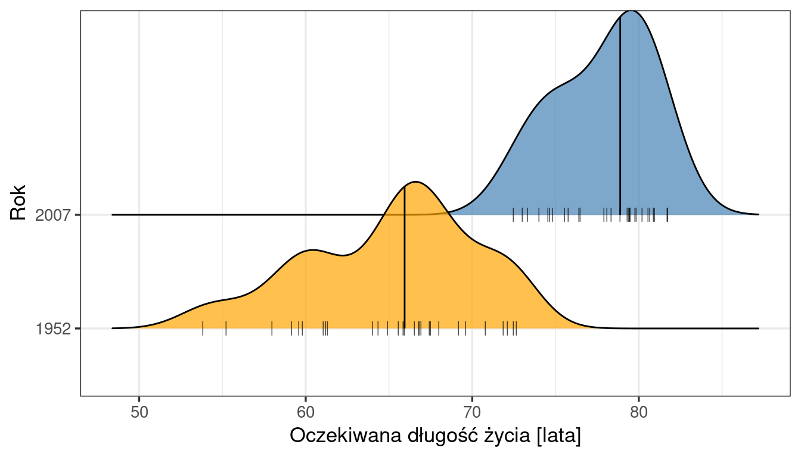
Rycina 23.1: Rozkład oczekiwanej długości życia w 29 krajach Europy w 1952 i 2007 roku; kreski pod krzywą — poszczególne kraje, pionowa linia — mediana
Rozmieszczenie przestrzenne oczekiwanej długości życia pokazano na rycinie 23.2. W 1952 roku najniższe klasy — poniżej 60 lat — obejmowały kraje Półwyspu Bałkańskiego (Bośnię i Hercegowinę, Albanię, Serbię, Czarnogórę, Bułgarię) oraz Portugalię. Najwyższą klasę, 70–75 lat, miały Norwegia, Islandia, Holandia, Szwecja i Dania. W 2007 roku żaden kraj nie miał wartości poniżej 70 lat. Najniższa klasa, 70–75 lat, obejmowała kraje Europy Wschodniej (Rumunię, Bułgarię, Węgry, Słowację) oraz Serbię, Czarnogórę i Bośnię i Hercegowinę. Wartość 80 lat i więcej miały Islandia, Szwajcaria, Hiszpania, Szwecja, Francja, Włochy i Norwegia — kraje Europy Północnej, Zachodniej i Południowej. Szary kolor mają państwa spoza 29 krajów raportu: państwa, których nie obejmuje zbiór danych (Sekcja 23.2), m.in. Rosja, Ukraina, Białoruś, Mołdawia, Litwa, Łotwa, Estonia, Macedonia Północna, Kosowo i Luksemburg, oraz państwa spoza Europy.
Kod
# pakiety do pracy z danymi przestrzennymi i granice państw światalibrary(sf)library(rnaturalearth)# granice państw jako obiekt przestrzenny sfswiat <-ne_countries(scale ="medium", returnclass ="sf")# układ współrzędnych i zasięg mapy dla każdego kontynentumapy <-list(Europa =list(crs =3035, x =c(2500000, 6500000), y =c(1400000, 5400000)), # metryAfryka =list(crs =4326, x =c(-20, 55), y =c(-36, 38)), # stopnieAmeryki =list(crs =4326, x =c(-170, -30), y =c(-56, 72)),Azja =list(crs =4326, x =c(25, 150), y =c(-12, 55)))zasieg <- mapy[[wybrany_kontynent]]# granice 29 krajów połączone z danymi obu lat (dwa wiersze dla każdego kraju)mapa_europa <- swiat |>inner_join(europa, by =c("iso_a3_eh"="Kod"))# granice subregionów: połączenie (st_union) granic krajów należących do subregionusubregiony <- mapa_europa |>filter(year == rok_koncowy) |># jeden wiersz dla krajugroup_by(subregion_pl) |>summarise(geometry =st_union(geometry)) # jeden obszar dla subregionu
Kod
# dwie mapy: warstwa szara (wszystkie państwa) i warstwa z danymi w panelach według rokuggplot() +geom_sf(data = swiat, fill ="grey85", colour ="white", linewidth =0.2) +geom_sf(data = mapa_europa, aes(fill = lifeExp), colour ="white", linewidth =0.2) +geom_sf(data = subregiony, fill =NA, colour ="black", linewidth =0.6) +# subregionyfacet_wrap(~ rok) +# osobny panel dla każdego rokuscale_fill_fermenter(breaks = granice_klas, # granice klaspalette ="YlGnBu", direction =1,limits = zakres_klas) +# zakres skali (także na wykresie treemap)coord_sf(crs = zasieg$crs, xlim = zasieg$x, ylim = zasieg$y) +# układ i zasięg mapylabs(fill ="Oczekiwana długość\nżycia [lata]") +theme_void(base_size =13) +theme(legend.position ="bottom",legend.key.width =unit(1.5, "cm")) # szersze pola legendy
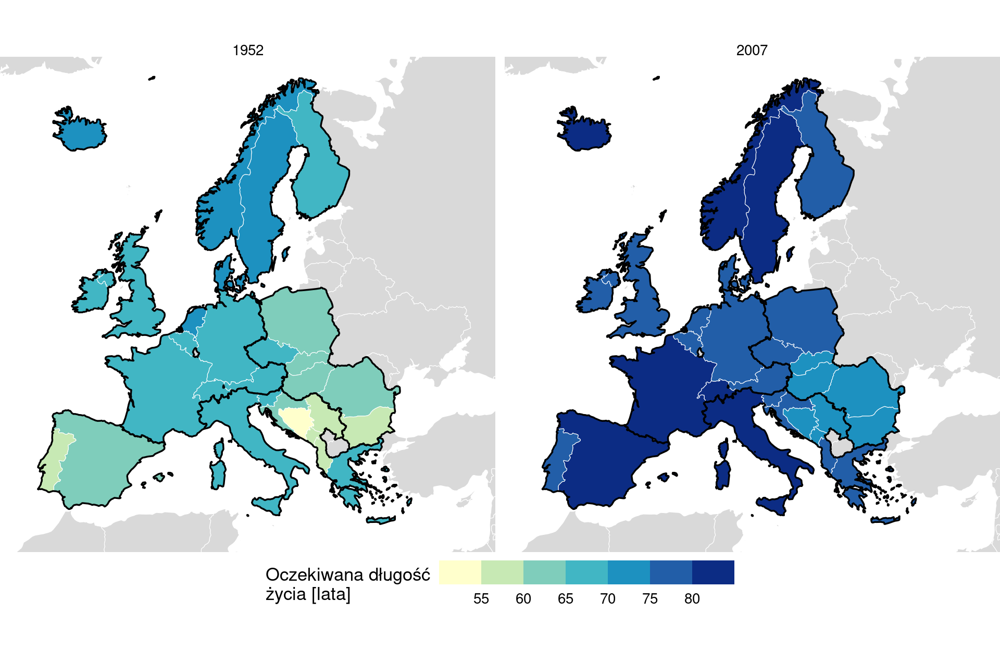
Rycina 23.2: Oczekiwana długość życia w krajach Europy w 1952 i 2007 roku; czarne linie — granice subregionów, szary kolor — kraje spoza 29 krajów raportu
Liczbę krajów i ludności w klasach oczekiwanej długości życia podają Tabela 23.2 i Tabela 23.3. Ludność 29 krajów wynosiła 395,9 mln w 1952 roku i 514,9 mln w 2007 roku. W 1952 roku 64,6% ludności żyło w 12 krajach klasy 65–70 lat, a 29,0% — w krajach o wartości poniżej 65 lat. Klasa najwyższa, 70–75 lat, obejmowała 5 krajów i 6,4% ludności. W 2007 roku 53,1% ludności żyło w krajach klasy 75–80 lat, 35,2% — w siedmiu krajach o wartości 80 lat i więcej, a 11,7% — w krajach klasy 70–75 lat.
Kod
# liczba krajów i ludność w klasach oczekiwanej długości życia, osobno dla każdego rokuklasy <- europa |>mutate(klasa =cut(lifeExp, breaks =c(0, granice_klas, 100),right =FALSE)) |># przedziały domknięte z lewej stronygroup_by(rok, klasa) |>summarise(n =n(), ludnosc_mln =sum(pop) /1e6, .groups ="drop_last") |>mutate(udzial = ludnosc_mln /sum(ludnosc_mln) *100) |># udział w ludności roku [%]ungroup()# wiersz „Razem” dla każdego roku: łączna liczba krajów i ludnościrazem <- klasy |>group_by(rok) |>summarise(klasa ="Razem", n =sum(n), ludnosc_mln =sum(ludnosc_mln),udzial =sum(udzial))# klasy i wiersze „Razem” w jednej tabeli, uporządkowane według rokuklasy_razem <-bind_rows(klasy, razem) |>arrange(rok)
Kod
# tabela dla 1952 roku: wiersze tego roku, bez kolumny rokklasy_razem |>filter(rok == rok_poczatkowy) |>select(-rok) |> knitr::kable(col.names =c("Klasa [lata]", "Liczba krajów", "Ludność [mln]","Udział w ludności [%]"),digits =1,format.args =list(decimal.mark =",") )
Tabela 23.2: Liczba krajów, liczba ludności i udział w ludności 29 krajów Europy według klas oczekiwanej długości życia w 1952 roku
Klasa [lata]
Liczba krajów
Ludność [mln]
Udział w ludności [%]
[0,55)
1
2,8
0,7
[55,60)
5
24,4
6,2
[60,65)
6
87,9
22,2
[65,70)
12
255,6
64,6
[70,75)
5
25,3
6,4
Razem
29
395,9
100,0
Kod
# tabela dla 2007 rokuklasy_razem |>filter(rok == rok_koncowy) |>select(-rok) |> knitr::kable(col.names =c("Klasa [lata]", "Liczba krajów", "Ludność [mln]","Udział w ludności [%]"),digits =1,format.args =list(decimal.mark =",") )
Tabela 23.3: Liczba krajów, liczba ludności i udział w ludności 29 krajów Europy według klas oczekiwanej długości życia w 2007 roku
Klasa [lata]
Liczba krajów
Ludność [mln]
Udział w ludności [%]
[70,75)
7
60,4
11,7
[75,80)
15
273,4
53,1
[80,100)
7
181,2
35,2
Razem
29
514,9
100,0
Strukturę ludności według klas przedstawia Rycina 23.3. Mapa i wykres treemap uzupełniają się: obie ryciny mają te same klasy i kolory, ale pole oznacza na nich co innego. Na mapie (Rycina 23.2) pole odpowiada powierzchni kraju, dlatego dużą część obrazu zajmują kraje o dużej powierzchni i małej liczbie ludności, np. Norwegia, Szwecja i Finlandia. Na rycinie 23.3 pole odpowiada liczbie ludności, a prostokąty krajów są zgrupowane według subregionów; położenia geograficznego ta rycina nie przedstawia. Największe prostokąty — Niemcy, Wielka Brytania, Włochy i Francja — mają w 1952 roku kolor klasy 65–70 lat, a w 2007 roku klasy 75–80 lat (Niemcy, Wielka Brytania) i 80 lat i więcej (Francja, Włochy). W obu latach największy prostokąt subregionu ma Europa Zachodnia.
Na rycinie 23.3 widać także zróżnicowanie wewnątrz subregionów — liczbę klas w obrębie prostokąta subregionu. W 1952 roku kraje Europy Południowej należały do czterech klas (od poniżej 55 do 65–70 lat), Europy Wschodniej — do trzech, a Europy Północnej i Zachodniej — do dwóch. W 2007 roku kraje Europy Południowej należały do trzech klas (od 70–75 do 80 lat i więcej), a pozostałych subregionów — do dwóch.
Kod
# pakiet do wykresów treemaplibrary(treemapify)# treemap: pole prostokąta = liczba ludności, kolor = klasa oczekiwanej długości życiaggplot(europa, aes(area = pop, fill = lifeExp, label = kraj,subgroup = subregion_pl)) +geom_treemap(colour ="grey40") +# prostokąty krajówgeom_treemap_subgroup_border(colour ="white", size =4) +# granice subregionówgeom_treemap_subgroup_text(colour ="white", place ="bottomleft", # nazwy subregionówfontface ="bold", size =13, padding.y = grid::unit(2, "mm")) +geom_treemap_text(colour ="black", place ="topleft", grow =FALSE, # nazwy krajówsize =11) +facet_wrap(~ rok) +scale_fill_fermenter(breaks = granice_klas,palette ="YlGnBu", direction =1,limits = zakres_klas) +# zakres skali jak na mapielabs(fill ="Oczekiwana długość\nżycia [lata]") +theme_bw(base_size =13) +theme(legend.position ="bottom",legend.key.width =unit(1.5, "cm"))
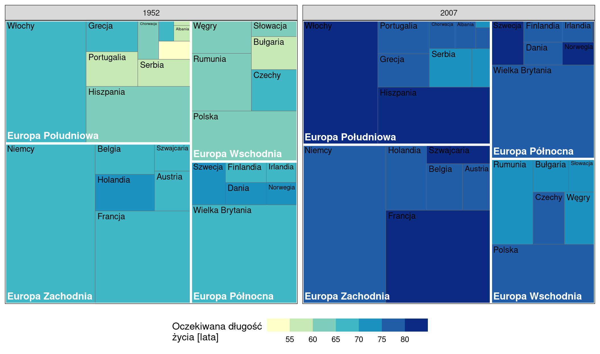
Rycina 23.3: Liczba ludności krajów Europy w 1952 i 2007 roku (pole prostokąta) według subregionów (białe obramowania) i klas oczekiwanej długości życia (kolor)
23.4.2 Zróżnicowanie między subregionami i wewnątrz subregionów
W 1952 roku mediany subregionów (Tabela 23.4) wynosiły od 60,5 roku (Europa Południowa) do 70,8 roku (Europa Północna), czyli różniły się o 10,3 roku. W 2007 roku wynosiły od 74,0 roku (Europa Wschodnia) do 79,8 roku (Europa Zachodnia) i różniły się o 5,8 roku. Zmieniła się kolejność subregionów: w 1952 roku najniższą medianę miała Europa Południowa, w 2007 roku — Europa Wschodnia.
Zróżnicowanie wewnątrz subregionów zmalało w każdym z nich: odchylenie standardowe zmniejszyło się w Europie Północnej z 2,6 do 1,2 roku, w Południowej z 4,5 do 2,5 roku, we Wschodniej z 2,7 do 1,6 roku, a w Zachodniej z 2,0 do 0,9 roku. W obu latach największe zróżnicowanie miała Europa Południowa (współczynnik zmienności 7,4% w 1952 i 3,3% w 2007 roku), najmniejsze — Europa Zachodnia (2,9% i 1,1%).
Kod
# te same statystyki, osobno dla każdego subregionu w każdym rokueuropa |>group_by(subregion_pl, rok) |># podział na subregiony i latasummarise(n =n(),srednia =mean(lifeExp),mediana =median(lifeExp),q1 =quantile(lifeExp, 0.25),q3 =quantile(lifeExp, 0.75),iqr =IQR(lifeExp),minimum =min(lifeExp),maksimum =max(lifeExp),odch_std =sd(lifeExp),wsp_zmiennosci =sd(lifeExp) /mean(lifeExp) *100,.groups ="drop"# usunięcie podziału na grupy ) |> knitr::kable(col.names =c("Subregion", "Rok", "n", "Średnia", "Mediana", "Q1", "Q3", "IQR","Min.", "Maks.", "Odch. std.", "Wsp. zmienności"),digits =1,format.args =list(decimal.mark =",") )
Tabela 23.4: Statystyki opisowe oczekiwanej długości życia w subregionach Europy [lata; współczynnik zmienności w %]
Subregion
Rok
n
Średnia
Mediana
Q1
Q3
IQR
Min.
Maks.
Odch. std.
Wsp. zmienności
Europa Północna
1952
7
70,1
70,8
68,0
72,2
4,1
66,6
72,7
2,6
3,7
Europa Północna
2007
7
79,8
79,4
79,1
80,5
1,4
78,3
81,8
1,2
1,5
Europa Południowa
1952
10
61,0
60,5
58,3
65,4
7,1
53,8
65,9
4,5
7,4
Europa Południowa
2007
10
77,3
77,2
75,1
79,1
4,1
74,0
80,9
2,5
3,3
Europa Wschodnia
1952
6
62,9
62,7
61,1
64,3
3,2
59,6
66,9
2,7
4,3
Europa Wschodnia
2007
6
74,3
74,0
73,1
75,3
2,2
72,5
76,5
1,6
2,1
Europa Zachodnia
1952
6
68,6
67,8
67,4
69,2
1,8
66,8
72,1
2,0
2,9
Europa Zachodnia
2007
6
80,1
79,8
79,5
80,4
0,9
79,4
81,7
0,9
1,1
Na wykresie pudełkowym (Rycina 23.4) mediana Europy Wschodniej z 2007 roku (74,0 roku) leży poniżej pudełek pozostałych subregionów z tego roku. Jedyną wartością odstającą jest Holandia w Europie Zachodniej w 1952 roku (72,1 roku) — powyżej Q3 + 1,5 × IQR tego subregionu (czerwona gwiazdka).
Kod
# oznaczenie wartości odstających w każdym subregionie i roku (reguła 1,5 × IQR,# ta sama, którą stosuje geom_boxplot())europa_subregiony <- europa |>group_by(subregion_pl, rok) |>mutate(q1 =quantile(lifeExp, 0.25),q3 =quantile(lifeExp, 0.75),iqr =IQR(lifeExp),odstajaca = lifeExp < q1 -1.5* iqr | lifeExp > q3 +1.5* iqr # TRUE albo FALSE ) |>ungroup()
Kod
# wykres pudełkowy: dla każdego subregionu dwa pudełka (1952 i 2007) obok siebieggplot(europa_subregiony, aes(x = subregion_pl, y = lifeExp, fill = rok)) +geom_boxplot(outlier.shape =NA, alpha =0.6) +# bez punktów wartości odstającychgeom_point(aes(group = rok, shape = odstajaca, colour = odstajaca), # punkty krajówposition =position_dodge(width =0.75), size =2) +scale_fill_manual(values = kolory_lat) +scale_shape_manual(values =c("FALSE"=16, "TRUE"=8), # kółko, gwiazdkalabels =c("kraj", "wartość odstająca")) +scale_colour_manual(values =c("FALSE"="black", "TRUE"="red"),labels =c("kraj", "wartość odstająca")) +labs(x ="Subregion", y ="Oczekiwana długość życia [lata]", fill ="Rok",shape =NULL, colour =NULL) +# jedna legenda dla kształtu i kolorutheme_bw(base_size =13) +theme(legend.position ="bottom")
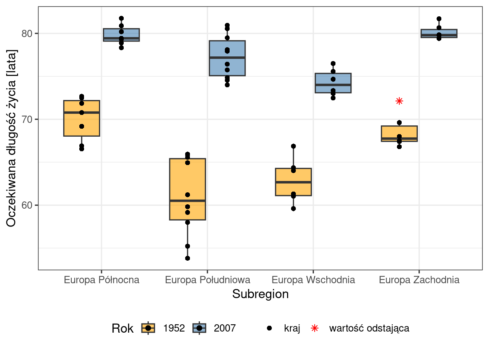
Rycina 23.4: Oczekiwana długość życia w subregionach Europy w 1952 i 2007 roku; punkty — poszczególne kraje, czerwona gwiazdka — wartość odstająca
23.4.3 Zmiany i przyrost oczekiwanej długości życia w krajach
Oczekiwana długość życia wzrosła we wszystkich 29 krajach. Wykres hantlowy (Rycina 23.5) przedstawia dla każdego kraju wartości z obu lat i ich różnicę: długość odcinka jest przyrostem w latach 1952–2007. Odcinki są najdłuższe w górnej części wykresu, gdzie leżą kraje Europy Południowej, i najkrótsze w dolnej, gdzie leżą kraje Europy Północnej i Holandia. Punkty z 2007 roku zajmują węższy przedział wartości niż punkty z 1952 roku.
Kod
# przyrost w każdym kraju: tabela szeroka z kolumną dla każdego rokuprzyrost <- europa |>mutate(okres =if_else(year == rok_poczatkowy, "poczatek", "koniec")) |>select(kraj, okres, lifeExp) |>pivot_wider(names_from = okres, values_from = lifeExp) |>mutate(przyrost = koniec - poczatek)# dane obu lat z dołączonym przyrostem krajueuropa_przyrost <- europa |>inner_join(select(przyrost, kraj, przyrost), by ="kraj")
Kod
# wykres hantlowy: odcinek łączy wartości kraju z 1952 i 2007 rokuggplot(europa_przyrost, aes(x = lifeExp, y =fct_reorder(kraj, przyrost))) +geom_line(aes(group = kraj), colour ="grey60") +# odcinek między dwoma latamigeom_point(aes(colour = rok), size =2.5) +scale_colour_manual(values = kolory_lat) +labs(x ="Oczekiwana długość życia [lata]", y =NULL, colour ="Rok") +theme_bw(base_size =13) +theme(legend.position ="bottom")
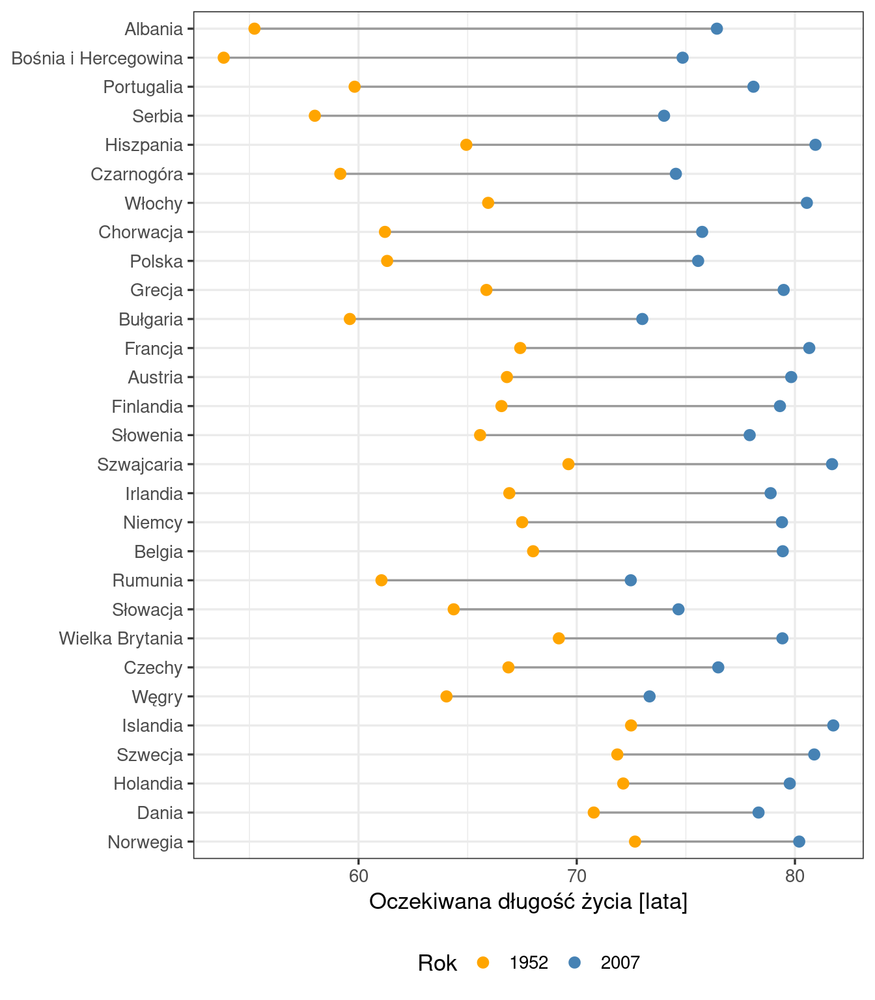
Rycina 23.5: Oczekiwana długość życia w 1952 i 2007 roku w 29 krajach Europy — wykres hantlowy; długość odcinka — przyrost; kraje uporządkowane według przyrostu
Największy przyrost oczekiwanej długości życia w latach 1952–2007 (Tabela 23.5, Rycina 23.6) odnotowano w Albanii (21,2 roku), Bośni i Hercegowinie (21,0), Portugalii (18,3), Serbii i Hiszpanii (po 16,0 roku; przyrost Serbii jest o 0,005 roku większy). Najmniejszy przyrost dotyczy Islandii (9,3 roku), Szwecji (9,0), Holandii, Danii i Norwegii (po 7,5–7,6 roku).
Kod
# kraje uporządkowane według przyrostu: pierwszych i ostatnich pięćprzyrost |>arrange(desc(przyrost)) |>slice(c(1:5, (n() -4):n())) |>select(kraj, poczatek, koniec, przyrost) |> knitr::kable(digits =1, format.args =list(decimal.mark =","),col.names =c("Kraj", rok_poczatkowy, rok_koncowy, "Przyrost"))
Tabela 23.5: Pięć krajów Europy o największym i pięć o najmniejszym przyroście oczekiwanej długości życia w latach 1952–2007 [lata]
Kraj
1952
2007
Przyrost
Albania
55,2
76,4
21,2
Bośnia i Hercegowina
53,8
74,9
21,0
Portugalia
59,8
78,1
18,3
Serbia
58,0
74,0
16,0
Hiszpania
64,9
80,9
16,0
Islandia
72,5
81,8
9,3
Szwecja
71,9
80,9
9,0
Holandia
72,1
79,8
7,6
Dania
70,8
78,3
7,6
Norwegia
72,7
80,2
7,5
Pięć krajów o najmniejszym przyroście to te same kraje, które w 1952 roku miały najwyższą oczekiwaną długość życia w Europie (od 70,8 do 72,7 roku). Wśród krajów o największym przyroście są trzy z pięciu krajów o najniższej wartości w 1952 roku (od 53,8 do 58,0 roku) oraz Portugalia, szósta od końca (59,8 roku); piątym jest Hiszpania (64,9 roku w 1952 roku). Mimo większego przyrostu kraje z górnego panelu — z wyjątkiem Hiszpanii (80,9 roku) — miały w 2007 roku niższą oczekiwaną długość życia (od 74,0 do 78,1 roku) niż każdy kraj z dolnego panelu (od 78,3 do 81,8 roku).
Kod
# pięć krajów o największym i pięć o najmniejszym przyrościeskrajne <-bind_rows( przyrost |>slice_max(przyrost, n =5) |>mutate(grupa ="Największy przyrost"), przyrost |>slice_min(przyrost, n =5) |>mutate(grupa ="Najmniejszy przyrost")) |>mutate(grupa =fct_inorder(grupa)) # kolejność paneli: jak w tabeli# dane obu lat dla wybranych krajów, z nazwą grupyeuropa_skrajne <- europa_przyrost |>inner_join(select(skrajne, kraj, grupa), by ="kraj")
Kod
# wykres słupkowy zgrupowany, poziomy: dwa słupki (1952, 2007) dla każdego krajuggplot(europa_skrajne, aes(x = lifeExp,y =fct_reorder(kraj, przyrost), # kolejność według przyrostufill = rok)) +geom_col(position ="dodge") +facet_wrap(~ grupa, ncol =1, scales ="free_y") +# dwa panele jeden pod drugimscale_fill_manual(values = kolory_lat) +labs(x ="Oczekiwana długość życia [lata]", y =NULL, fill ="Rok") +theme_bw(base_size =13) +theme(legend.position ="bottom")
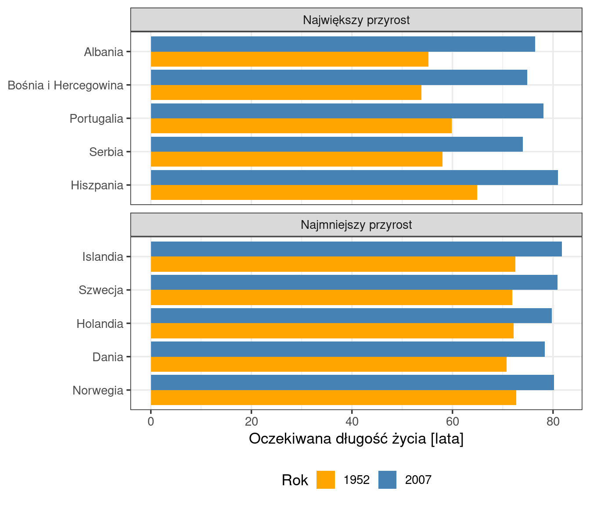
Rycina 23.6: Oczekiwana długość życia w 1952 i 2007 roku w pięciu krajach Europy o największym i pięciu o najmniejszym przyroście; kraje uporządkowane według przyrostu
23.5 Wnioski
W latach 1952–2007 oczekiwana długość życia wzrosła we wszystkich 29 krajach Europy, a różnice między krajami zmalały. Zmniejszenie zróżnicowania widać dla całej Europy (Rycina 23.1), między subregionami i wewnątrz każdego z nich (Rycina 23.4). Największy przyrost wystąpił w krajach o najniższej wartości w 1952 roku, a najmniejszy — w krajach o wartości najwyższej (Rycina 23.5, Rycina 23.6). Mimo to w 2007 roku kraje o najniższej oczekiwanej długości życia nadal leżały na Półwyspie Bałkańskim i w Europie Wschodniej, a najwyższe wartości miały kraje Europy Północnej, Zachodniej i Południowej (Rycina 23.2). W 2007 roku ponad jedna trzecia ludności 29 krajów żyła w krajach o oczekiwanej długości życia 80 lat i więcej (Rycina 23.3).
Europa (Sekcja 23.4.1). Mediana wzrosła z 65,9 do 78,9 roku, współczynnik zmienności zmalał z 7,8% do 3,6%. Najniższa wartość z 2007 roku (72,5) była zbliżona do najwyższej z 1952 roku (72,7). W obu latach najniższe klasy obejmowały kraje Półwyspu Bałkańskiego i Europy Wschodniej; w 2007 roku żaden kraj nie miał wartości poniżej 70 lat, a 35,2% ludności 29 krajów żyło w krajach o oczekiwanej długości życia 80 lat i więcej.
Subregiony (Sekcja 23.4.2). Różnica median subregionów zmalała z 10,3 do 5,8 roku. Najniższą medianę miała w 1952 roku Europa Południowa, w 2007 roku — Europa Wschodnia. Zróżnicowanie wewnątrz każdego subregionu zmalało; największe było w obu latach w Europie Południowej.
Kraje (Sekcja 23.4.3). Oczekiwana długość życia wzrosła we wszystkich krajach. Największy przyrost: Albania (21,2 roku) i Bośnia i Hercegowina (21,0); najmniejszy: Norwegia, Dania i Holandia (7,5–7,6 roku) — kraje o najwyższej wartości w 1952 roku.
23.6 Wybór sposobu prezentacji wyników
Każdą z sekcji Wyników można przedstawić na kilku typach wykresów. Poniżej te same dane przedstawiono w innych formach. Przy każdej rycinie opisano, co z niej wynika, czego z niej nie widać i dlaczego w raporcie wykorzystano inny wykres.
23.6.1 Rozkład w 1952 i 2007 roku
Rozkład oczekiwanej długości życia w dwóch latach można przedstawić także na histogramach, nakładających się wykresach gęstości i wykresie paskowym.
Kod
# histogram w dwóch panelach ze wspólną osią xggplot(europa, aes(x = lifeExp, fill = rok)) +geom_histogram(binwidth =2, colour ="white") +facet_wrap(~ rok, ncol =1) +scale_fill_manual(values = kolory_lat) +labs(x ="Oczekiwana długość życia [lata]", y ="Liczba krajów") +theme_bw(base_size =13) +theme(legend.position ="none")
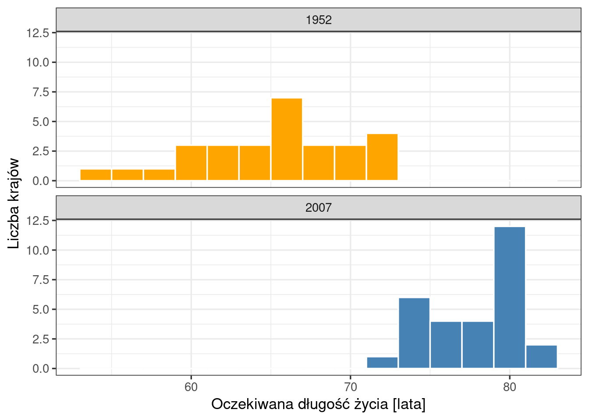
Rycina 23.7: Oczekiwana długość życia w Europie w 1952 i 2007 roku — histogramy (przedziały co 2 lata)
Kod
# dwie krzywe gęstości na wspólnej osiggplot(europa, aes(x = lifeExp, fill = rok)) +geom_density(alpha =0.5) +scale_fill_manual(values = kolory_lat) +labs(x ="Oczekiwana długość życia [lata]", y ="Gęstość", fill ="Rok") +theme_bw(base_size =13)
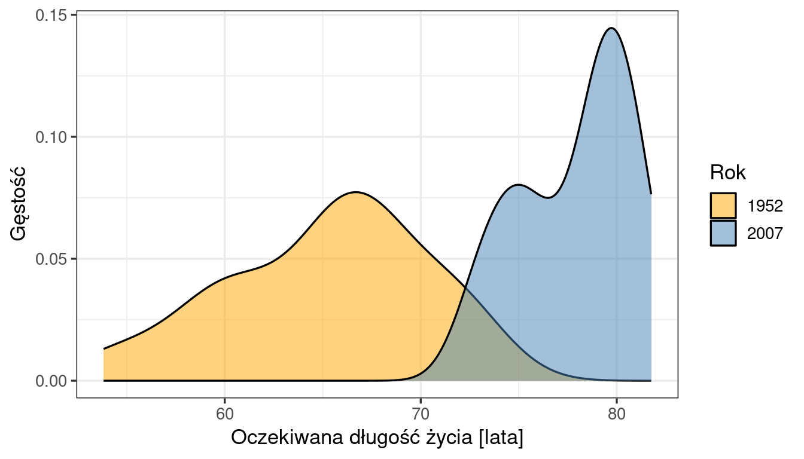
Rycina 23.8: Oczekiwana długość życia w Europie w 1952 i 2007 roku — nakładające się wykresy gęstości
Kod
# wykres paskowy: każdy kraj jako kreska na osi wartościggplot(europa, aes(x = lifeExp, y = rok, colour = rok)) +geom_point(shape ="|", size =8) +scale_colour_manual(values = kolory_lat) +labs(x ="Oczekiwana długość życia [lata]", y ="Rok") +theme_bw(base_size =13) +theme(legend.position ="none")
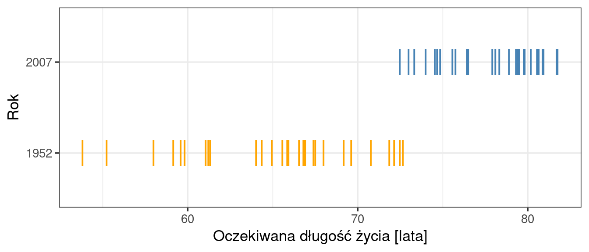
Rycina 23.9: Oczekiwana długość życia w Europie w 1952 i 2007 roku — wykres paskowy; kreska — kraj
Histogram (Rycina 23.7) podaje liczbę krajów w przedziałach wartości. Przy 29 krajach liczności przedziałów są małe (w 1952 roku od 1 do 7 krajów), dlatego kształt histogramu zależy od szerokości przedziału (binwidth) i położenia jego granic. Przesunięcie rozkładu odczytuje się z porównania dwóch paneli.
Nakładające się wykresy gęstości (Rycina 23.8) przedstawiają oba rozkłady na wspólnej osi, co ułatwia porównanie położenia i szerokości. Według Wilkego (2019) ta forma odpowiada porównaniu niewielkiej liczby rozkładów. Krzywa jest wygładzeniem i nie pokazuje liczby ani położenia poszczególnych krajów.
Wykres paskowy (Rycina 23.9) przedstawia wszystkie obserwacje bez przetworzenia — widać, że zakresy obu lat stykają się w okolicy 72,5–72,7 roku. Kreski krajów o zbliżonych wartościach nakładają się, dlatego zagęszczenia trudno ocenić.
W raporcie wykorzystano wykres grzbietowy z kreskami krajów pod krzywą (Rycina 23.1): łączy kształt rozkładu (krzywa), położenie mediany i wszystkie obserwacje. Przy dwóch rozkładach nakładające się wykresy gęstości są równorzędną formą; wykres grzbietowy pozostaje czytelny także przy większej liczbie rozkładów (np. dla wszystkich 12 lat zbioru).
23.6.2 Rozmieszczenie przestrzenne
Rozmieszczenie przestrzenne w dwóch latach można przedstawić także na mapach z osobną skalą dla każdego roku albo na jednej mapie przyrostu.
Kod
# pakiet do łączenia wykresów w jedną rycinęlibrary(patchwork)# mapa 1952: klasy co 3 lata dobrane do zakresu wartości z 1952 rokumapa_1952 <-ggplot() +geom_sf(data = swiat, fill ="grey85", colour ="white", linewidth =0.2) +geom_sf(data =filter(mapa_europa, year == rok_poczatkowy), aes(fill = lifeExp),colour ="white", linewidth =0.2) +geom_sf(data = subregiony, fill =NA, colour ="black", linewidth =0.6) +scale_fill_fermenter(breaks =c(57, 60, 63, 66, 69, 72),palette ="Oranges", direction =1) +coord_sf(crs = zasieg$crs, xlim = zasieg$x, ylim = zasieg$y) +labs(fill ="Lata") +theme_void(base_size =13) +theme(legend.position ="bottom", legend.key.width =unit(1, "cm"))# mapa 2007: klasy co 2 lata dobrane do zakresu wartości z 2007 rokumapa_2007 <-ggplot() +geom_sf(data = swiat, fill ="grey85", colour ="white", linewidth =0.2) +geom_sf(data =filter(mapa_europa, year == rok_koncowy), aes(fill = lifeExp),colour ="white", linewidth =0.2) +geom_sf(data = subregiony, fill =NA, colour ="black", linewidth =0.6) +scale_fill_fermenter(breaks =c(74, 76, 78, 80),palette ="Blues", direction =1) +coord_sf(crs = zasieg$crs, xlim = zasieg$x, ylim = zasieg$y) +labs(fill ="Lata") +theme_void(base_size =13) +theme(legend.position ="bottom", legend.key.width =unit(1, "cm"))mapa_1952 + mapa_2007 +plot_annotation(tag_levels ="A")
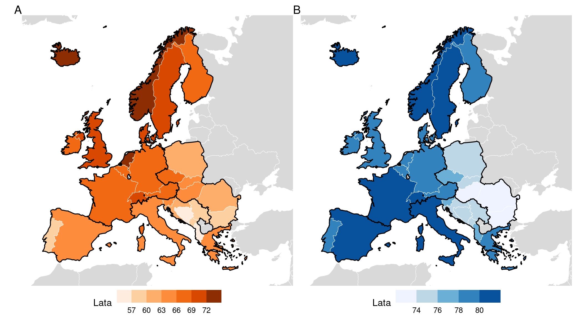
Rycina 23.10: Oczekiwana długość życia w krajach Europy w 1952 (A) i 2007 roku (B) — osobne skale dla każdego roku (wariant nieprzeznaczony do porównania lat); czarne linie — granice subregionów
Kod
# granice krajów połączone z tabelą przyrostu (jeden wiersz dla kraju)mapa_przyrost <- swiat |>inner_join(europa |>filter(year == rok_koncowy) |>select(kraj, Kod),by =c("iso_a3_eh"="Kod")) |>inner_join(przyrost, by ="kraj")ggplot() +geom_sf(data = swiat, fill ="grey85", colour ="white", linewidth =0.2) +geom_sf(data = mapa_przyrost, aes(fill = przyrost), colour ="white", linewidth =0.2) +geom_sf(data = subregiony, fill =NA, colour ="black", linewidth =0.6) +scale_fill_fermenter(breaks =c(10, 12, 14, 16, 18), # klasy co 2 latapalette ="Purples", direction =1) +coord_sf(crs = zasieg$crs, xlim = zasieg$x, ylim = zasieg$y) +labs(fill ="Przyrost [lata]") +theme_void(base_size =13) +theme(legend.position ="bottom", legend.key.width =unit(1.5, "cm"))
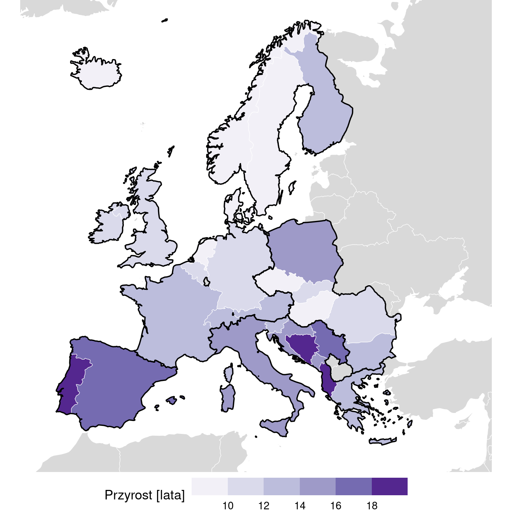
Rycina 23.11: Przyrost oczekiwanej długości życia w krajach Europy w latach 1952–2007; czarne linie — granice subregionów
Mapy z osobnymi skalami (Rycina 23.10) — wariant niepoprawny do porównania lat. Każda mapa ma inne granice klas i inną paletę, dlatego ten sam kolor oznacza na nich różne wartości, a wzrost oczekiwanej długości życia między latami nie jest widoczny. Map o różnym zakresie skali nie stosuje się do porównań. Jeśli dwie mapy przedstawiają tę samą zmienną w dwóch latach, skala na obu musi być jednakowa: te same granice klas i te same kolory. Osobne skale silniej różnicują kraje wewnątrz jednego roku, ale tę informację podają tabele i pozostałe wykresy raportu.
Mapa przyrostu (Rycina 23.11) przedstawia zmianę jedną mapą. Najciemniejsze klasy (16 lat i więcej) obejmują Portugalię, Hiszpanię, Bośnię i Hercegowinę, Albanię i Serbię, najjaśniejszą (poniżej 10 lat) — Islandię, Norwegię, Szwecję, Danię, Holandię, Czechy i Węgry. Nie widać poziomu oczekiwanej długości życia w żadnym z lat.
W raporcie wykorzystano dwie mapy ze wspólną skalą (Rycina 23.2), ponieważ pytanie dotyczy zmiany rozmieszczenia między latami, a tylko wspólna skala pozwala porównać mapy kolorem.
23.6.3 Struktura ludności
Strukturę ludności można przedstawić także na wykresie treemap bez podziału na subregiony.
Kod
# treemap bez argumentu subgroup: prostokąty krajów bez grupowaniaggplot(europa, aes(area = pop, fill = lifeExp, label = kraj)) +geom_treemap(colour ="white") +geom_treemap_text(colour ="black", place ="centre", grow =FALSE) +facet_wrap(~ rok) +scale_fill_fermenter(breaks = granice_klas,palette ="YlGnBu", direction =1, limits = zakres_klas) +labs(fill ="Oczekiwana długość\nżycia [lata]") +theme_bw(base_size =13) +theme(legend.position ="bottom", legend.key.width =unit(1.5, "cm"))
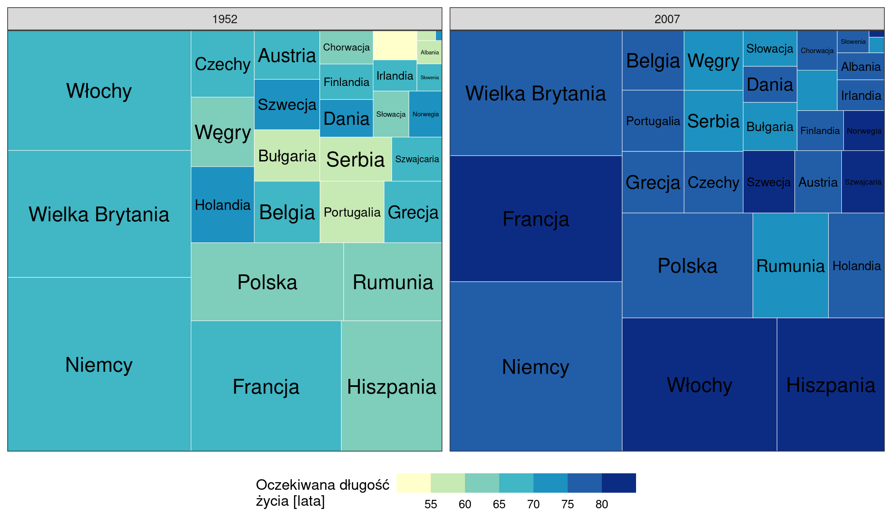
Rycina 23.12: Liczba ludności krajów Europy w 1952 i 2007 roku (pole prostokąta) i klasa oczekiwanej długości życia (kolor) — wykres treemap bez podziału na subregiony
Wykres treemap bez podziału na subregiony (Rycina 23.12) porządkuje prostokąty według liczby ludności: największe kraje znajdują się w jednym rogu, a kraje o tej samej klasie oczekiwanej długości życia łatwiej porównać ze sobą. Nie widać przynależności krajów do subregionów.
W raporcie wykorzystano wykres treemap z podziałem na subregiony (Rycina 23.3), ponieważ łączy strukturę ludności według klas z podziałem na subregiony analizowanym w Sekcja 23.4.2. Pole prostokąta przedstawia udział kraju w ludności 29 krajów w danym roku; wykres treemap nie pokazuje wzrostu łącznej liczby ludności między latami (z 395,9 do 514,9 mln, Tabela 23.2 i Tabela 23.3).
23.6.4 Subregiony
Rozkłady w subregionach można przedstawić także na wykresie pudełkowym bez punktów krajów, wykresie skrzypcowym i wykresie grzbietowym.
Kod
# wykres pudełkowy z wartościami odstającymi w kolorze czerwonymggplot(europa, aes(x = subregion_pl, y = lifeExp, fill = rok)) +geom_boxplot(outlier.colour ="red") +scale_fill_manual(values = kolory_lat) +labs(x ="Subregion", y ="Oczekiwana długość życia [lata]", fill ="Rok") +theme_bw(base_size =13) +theme(legend.position ="bottom")
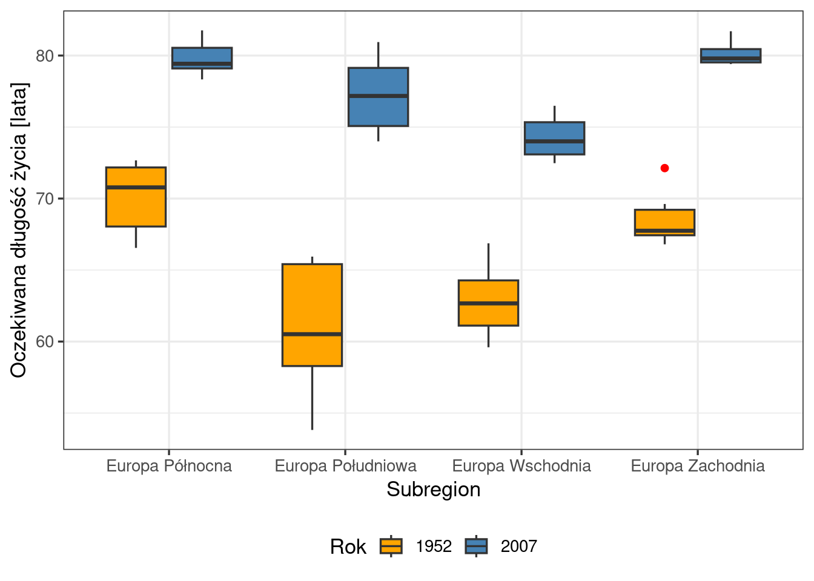
Rycina 23.13: Oczekiwana długość życia w subregionach Europy w 1952 i 2007 roku — wykres pudełkowy bez punktów krajów
Kod
# wykres skrzypcowy: szerokość figury odpowiada gęstości obserwacjiggplot(europa, aes(x = subregion_pl, y = lifeExp, fill = rok)) +geom_violin(alpha =0.6) +scale_fill_manual(values = kolory_lat) +labs(x ="Subregion", y ="Oczekiwana długość życia [lata]", fill ="Rok") +theme_bw(base_size =13) +theme(legend.position ="bottom")
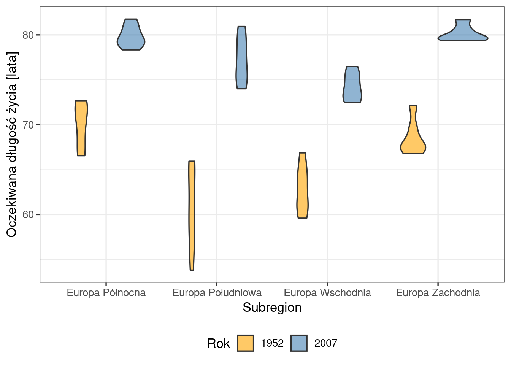
Rycina 23.14: Oczekiwana długość życia w subregionach Europy w 1952 i 2007 roku — wykres skrzypcowy
Kod
# wykres grzbietowy: wiersz = subregion, kolor = rokggplot(europa, aes(x = lifeExp, y = subregion_pl, fill = rok)) +geom_density_ridges(alpha =0.6) +scale_fill_manual(values = kolory_lat) +labs(x ="Oczekiwana długość życia [lata]", y ="Subregion", fill ="Rok") +theme_bw(base_size =13) +theme(legend.position ="bottom")
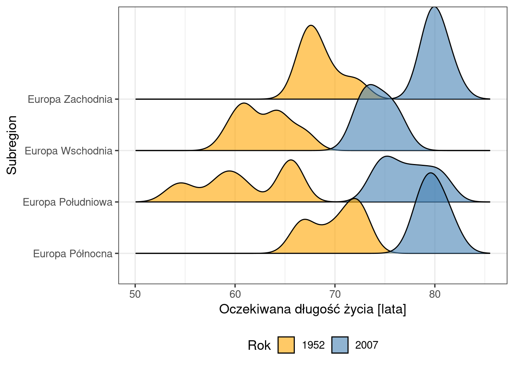
Rycina 23.15: Oczekiwana długość życia w subregionach Europy w 1952 i 2007 roku — wykres grzbietowy
Wykres pudełkowy bez punktów (Rycina 23.13) przedstawia medianę, kwartyle i wartości odstające (Holandia w 1952 roku — czerwony punkt). Nie pokazuje liczby krajów w subregionie: pudełko z 6 krajów wygląda tak samo jak pudełko z 10 krajów.
Wykres skrzypcowy (Rycina 23.14) przedstawia kształt rozkładu w każdej grupie, od wartości najmniejszej do największej. Kształt wyznaczono z 6–10 obserwacji, dlatego zależy on od położenia pojedynczych krajów. Wszystkie figury mają to samo pole, więc grupa o dużym rozproszeniu (Europa Południowa w 1952 roku) ma figurę wąską i wysoką. Nie widać liczby krajów ani mediany.
Wykres grzbietowy (Rycina 23.15) ustawia rozkłady subregionów jeden nad drugim na wspólnej osi wartości. Krzywe obu lat w tym samym wierszu częściowo się zasłaniają; podobnie jak wykres skrzypcowy opiera się na wygładzeniu małej liczby obserwacji.
W raporcie wykorzystano wykres pudełkowy z punktami krajów (Rycina 23.4): podaje miary położenia i zmienności, punkty pokazują liczbę i rozmieszczenie krajów, z których miary wyznaczono, a odrębny znak wyróżnia wartości odstające.
23.6.5 Zmiany i przyrost w krajach
Zmiany w krajach można przedstawić także jako zmianę miejsca w rankingu (wykres nachyleniowy) albo samą wartość przyrostu (wykres lizakowy).
Kod
# miejsce kraju w rankingu w każdym roku (1 = najwyższa oczekiwana długość życia)ranking <- europa |>group_by(rok) |>mutate(miejsce =min_rank(desc(lifeExp))) |>ungroup()# wykres nachyleniowy: odcinek łączy miejsce kraju w 1952 i 2007 rokuggplot(ranking, aes(x = rok, y = miejsce, group = kraj)) +geom_line(colour ="grey50") +geom_point(size =2) +geom_text(data =filter(ranking, year == rok_poczatkowy), # nazwy krajów po lewej stronieaes(label = kraj), hjust =1, nudge_x =-0.05, size =3.5) +geom_text(data =filter(ranking, year == rok_koncowy), # nazwy krajów po prawej stronieaes(label = kraj), hjust =0, nudge_x =0.05, size =3.5) +scale_y_reverse(breaks =c(1, 5, 10, 15, 20, 25, 29)) +# miejsce 1 na górzelabs(x ="Rok", y ="Miejsce w rankingu") +theme_bw(base_size =13)
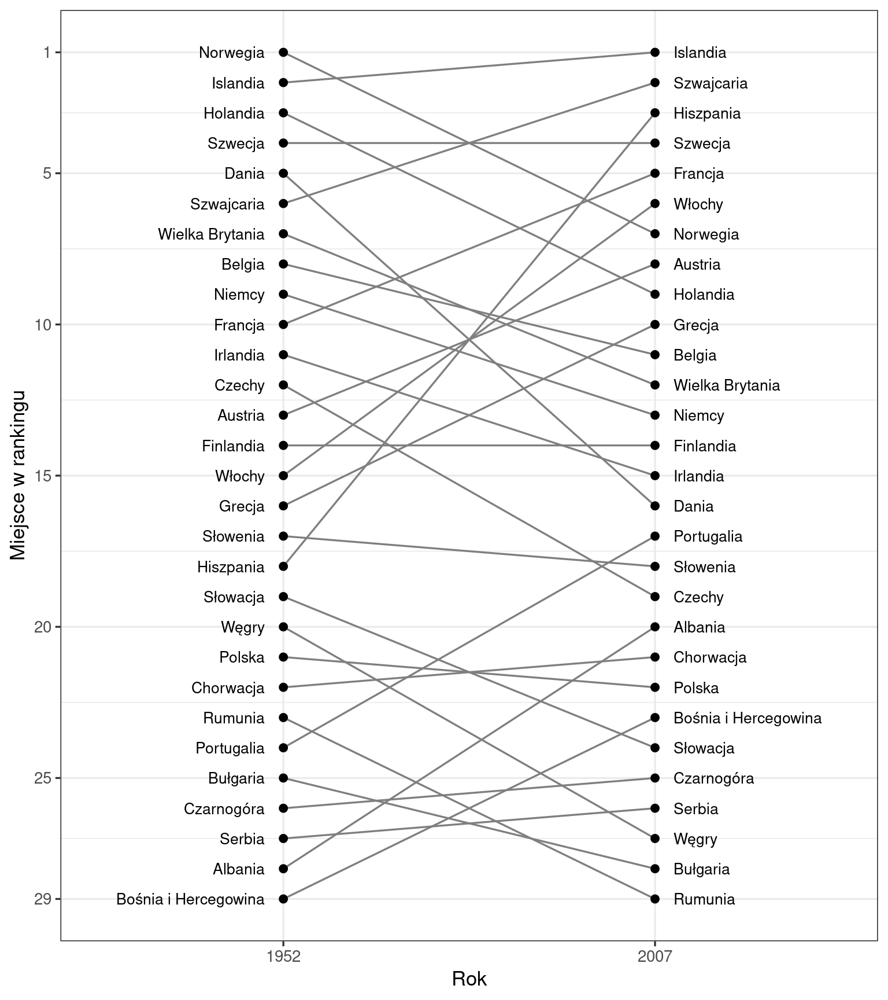
Rycina 23.16: Miejsce krajów Europy w rankingu oczekiwanej długości życia w 1952 i 2007 roku — wykres nachyleniowy (1 — najwyższa wartość)
Kod
# wykres lizakowy: odcinek od zera do wartości przyrostu zakończony punktemggplot(przyrost, aes(x = przyrost, y =fct_reorder(kraj, przyrost))) +geom_segment(aes(x =0, xend = przyrost, yend =fct_reorder(kraj, przyrost)),colour ="grey60") +geom_point(size =2.5, colour ="steelblue") +labs(x ="Przyrost oczekiwanej długości życia 1952–2007 [lata]", y =NULL) +theme_bw(base_size =13)
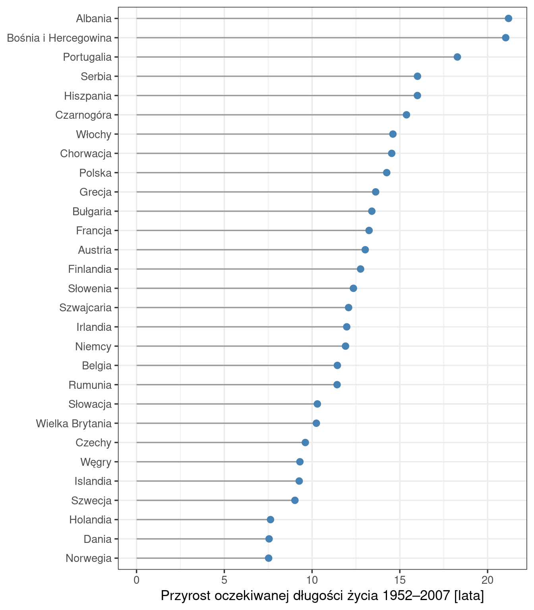
Rycina 23.17: Przyrost oczekiwanej długości życia w latach 1952–2007 w 29 krajach Europy — wykres lizakowy
Wykres nachyleniowy (Rycina 23.16) przedstawia zmianę miejsca w rankingu: Hiszpania przesunęła się z 18. na 3. miejsce, Dania — z 5. na 16. Ranking nie zawiera wartości oczekiwanej długości życia ani wielkości różnic między sąsiednimi miejscami.
Wykres lizakowy (Rycina 23.17) przedstawia wyłącznie przyrost, dla wszystkich krajów. Zero na osi ma tu znaczenie (brak zmiany), dlatego długość odcinka od zera jest właściwym sposobem kodowania. Nie widać, jaki był poziom wyjściowy kraju.
W raporcie wykorzystano wykres hantlowy (Rycina 23.5), ponieważ jednym znakiem graficznym przedstawia oba poziomy i przyrost dla wszystkich krajów. Wybór kryterium porządkowania wierszy (przyrost, wartość z 1952 albo z 2007 roku) zmienia jego odczytanie; w raporcie wiersze uporządkowano według przyrostu. Wykres słupkowy (Rycina 23.6) uzupełnia go o porównanie krajów skrajnych. Słupki zaczynają się od zera, dlatego przyrost odczytuje się jako różnicę długości dwóch słupków.
23.6.6 Subregiony w analizie zmian w czasie
Wyniki dla krajów (Sekcja 23.4.3) można połączyć z podziałem na subregiony (Sekcja 23.4.2). Subregion zaznacza się na wykresie na dwa sposoby: panelami (osobny fragment wykresu dla każdego subregionu) albo kolorem. Poniżej pięć wariantów: wykres hantlowy w panelach subregionów, wykres słupkowy i lizakowy przyrostu z kolorem subregionu oraz wykres słupkowy i kropkowy wartości z 1952 i 2007 roku w dwóch panelach, z kolorem subregionu.
Kod
# wykres hantlowy jak w raporcie, podzielony na panele według subregionuggplot(europa_przyrost, aes(x = lifeExp, y =fct_reorder(kraj, przyrost))) +geom_line(aes(group = kraj), colour ="grey60") +geom_point(aes(colour = rok), size =2.5) +facet_grid(subregion_pl ~ ., # panele jeden pod drugimscales ="free_y", space ="free_y") +# wysokość panelu = liczba krajówscale_colour_manual(values = kolory_lat) +labs(x ="Oczekiwana długość życia [lata]", y =NULL, colour ="Rok") +theme_bw(base_size =13) +theme(legend.position ="bottom")
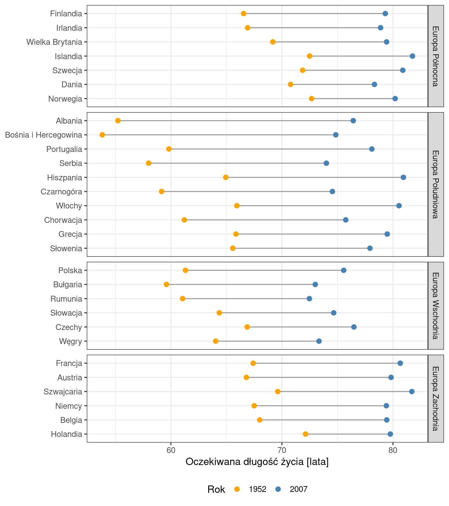
Rycina 23.18: Oczekiwana długość życia w 1952 i 2007 roku w krajach Europy — wykres hantlowy w panelach subregionów; kraje uporządkowane według przyrostu w obrębie subregionu
Kod
# kolory subregionów, inne niż kolory lat; kolejne kolory dotyczą kolejnych subregionówkolory_subregionow <-c("forestgreen", "firebrick", "darkorchid", "grey40", "goldenrod4","deeppink3")# przyrost kraju z dołączonym subregionem (jeden wiersz dla kraju)przyrost_subregiony <- europa |>filter(year == rok_koncowy) |>select(kraj, subregion_pl) |>inner_join(przyrost, by ="kraj")
Kod
# wykres słupkowy przyrostu: kolor słupka = subregionggplot(przyrost_subregiony, aes(x = przyrost, y =fct_reorder(kraj, przyrost),fill = subregion_pl)) +geom_col() +scale_fill_manual(values = kolory_subregionow) +# kolory subregionówlabs(x ="Przyrost oczekiwanej długości życia 1952–2007 [lata]", y =NULL,fill ="Subregion") +theme_bw(base_size =13) +theme(legend.position ="bottom")
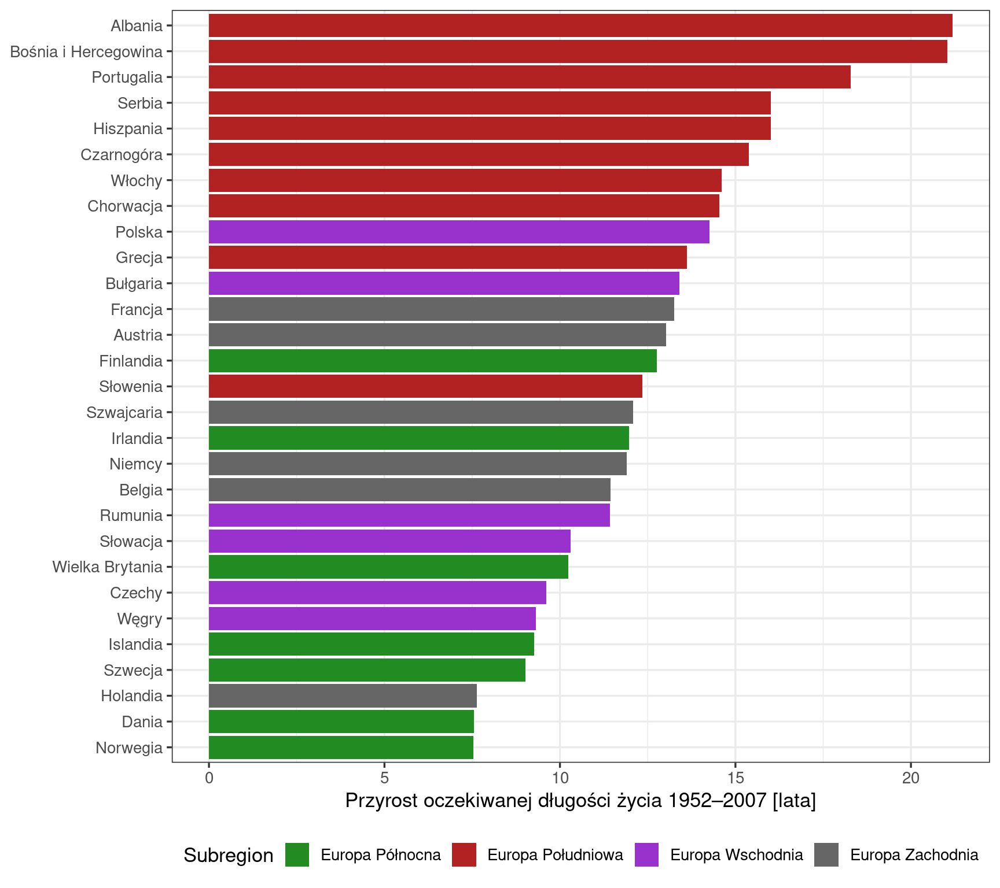
Rycina 23.19: Przyrost oczekiwanej długości życia w latach 1952–2007 w krajach Europy — wykres słupkowy; kolor — subregion
Kod
# wykres lizakowy przyrostu: kolor punktu = subregionggplot(przyrost_subregiony, aes(x = przyrost, y =fct_reorder(kraj, przyrost))) +geom_segment(aes(x =0, xend = przyrost, yend =fct_reorder(kraj, przyrost)),colour ="grey60") +geom_point(aes(colour = subregion_pl), size =3) +scale_colour_manual(values = kolory_subregionow) +labs(x ="Przyrost oczekiwanej długości życia 1952–2007 [lata]", y =NULL,colour ="Subregion") +theme_bw(base_size =13) +theme(legend.position ="bottom")
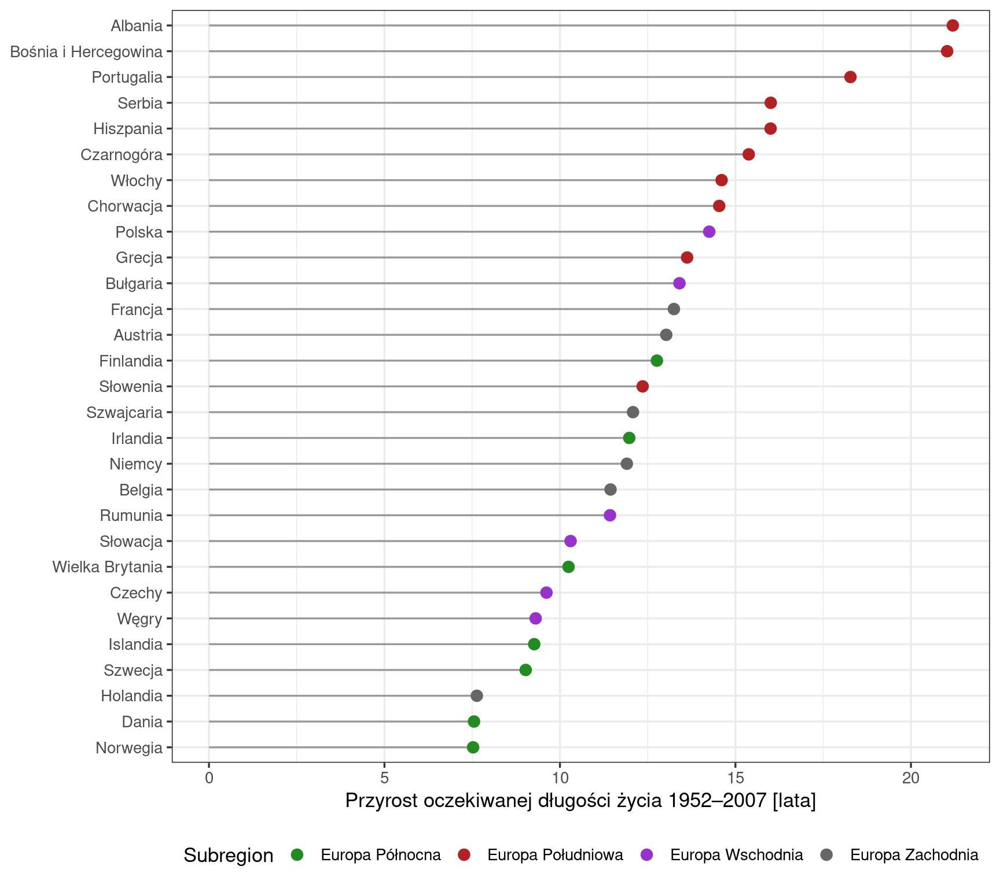
Rycina 23.20: Przyrost oczekiwanej długości życia w latach 1952–2007 w krajach Europy — wykres lizakowy; kolor punktu — subregion
Kod
# etykieta „kraj_rok”: osobna kategoria dla kraju w każdym roku, uporządkowana# według oczekiwanej długości życia — kolejność krajów w każdym panelu jest innaeuropa_ranking <- europa |>mutate(kraj_rok =fct_reorder(paste(kraj, rok, sep ="_"), lifeExp))
Kod
# wykres słupkowy: panel = rok, długość słupka = oczekiwana długość życia, kolor = subregionggplot(europa_ranking, aes(x = lifeExp, y = kraj_rok, fill = subregion_pl)) +geom_col() +facet_wrap(~ rok, scales ="free_y") +# każdy panel z własną kolejnościąscale_y_discrete(labels =function(x) str_remove(x, "_.*")) +# podpis bez rokuscale_fill_manual(values = kolory_subregionow) +labs(x ="Oczekiwana długość życia [lata]", y =NULL, fill ="Subregion") +theme_bw(base_size =13) +theme(legend.position ="bottom")
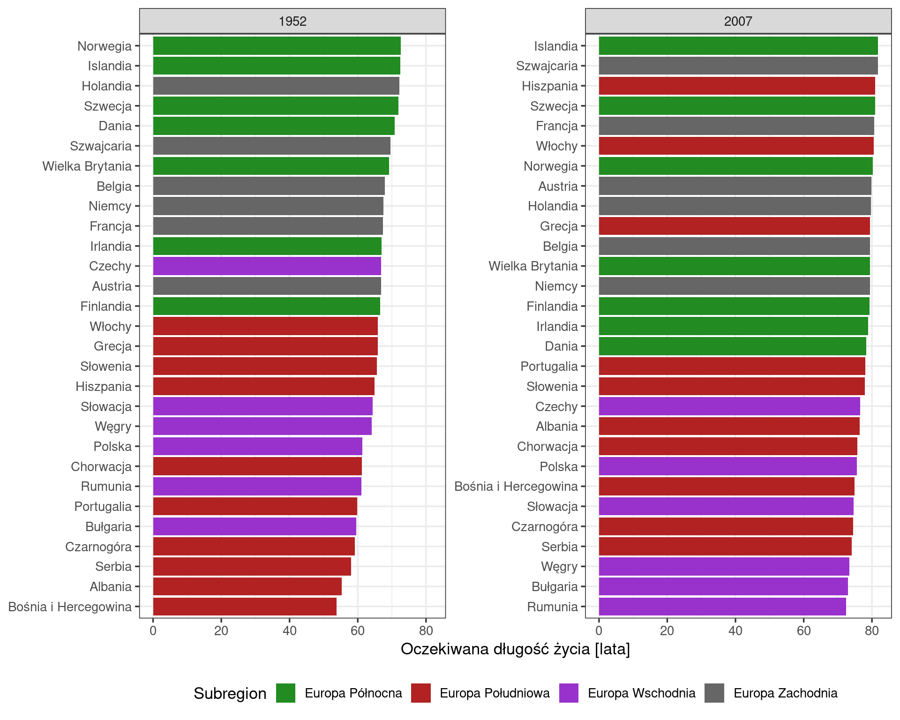
Rycina 23.21: Oczekiwana długość życia w krajach Europy w 1952 i 2007 roku — wykres słupkowy w panelach lat; kolor — subregion; kraje uporządkowane według wartości w danym roku
Kod
# wykres kropkowy: te same dane, położenie punktu zamiast długości słupkaggplot(europa_ranking, aes(x = lifeExp, y = kraj_rok, colour = subregion_pl)) +geom_point(size =3) +facet_wrap(~ rok, scales ="free") +# własna kolejność i zakres osi xscale_y_discrete(labels =function(x) str_remove(x, "_.*")) +scale_colour_manual(values = kolory_subregionow) +labs(x ="Oczekiwana długość życia [lata]", y =NULL, colour ="Subregion") +theme_bw(base_size =13) +theme(legend.position ="bottom")
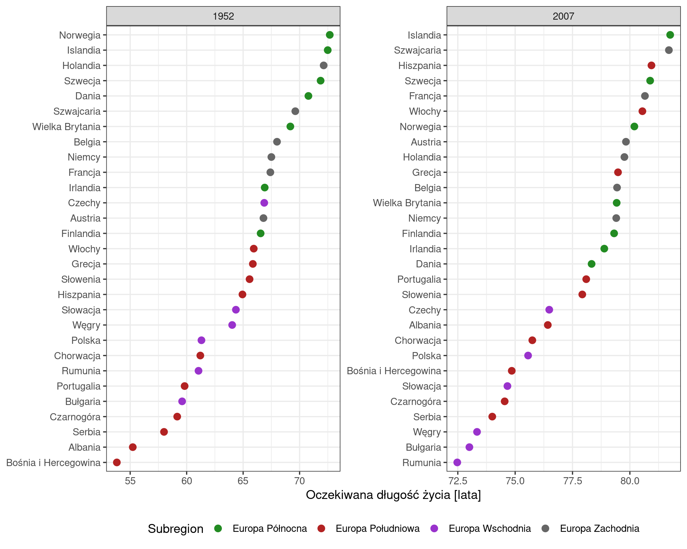
Rycina 23.22: Oczekiwana długość życia w krajach Europy w 1952 i 2007 roku — wykres kropkowy w panelach lat; kolor — subregion; kraje uporządkowane według wartości w danym roku
Wykres hantlowy w panelach subregionów (Rycina 23.18) przedstawia oba poziomy i przyrost każdego kraju w obrębie subregionu. Odcinki są najdłuższe w Europie Południowej, a najkrótsze w Europie Północnej. Kraje są uporządkowane według przyrostu tylko wewnątrz subregionu, dlatego wspólnego rankingu 29 krajów wykres nie zawiera.
Wykres słupkowy przyrostu z kolorem subregionu (Rycina 23.19) zachowuje ranking 29 krajów, a kolor wskazuje subregion: osiem krajów o największym przyroście należy do Europy Południowej, a wśród pięciu krajów o najmniejszym przyroście są cztery kraje Europy Północnej i Holandia. Zero na osi ma znaczenie (brak zmiany), dlatego słupki od zera są właściwą formą. Wykres nie pokazuje poziomu oczekiwanej długości życia w żadnym z lat.
Wykres lizakowy z kolorem punktu (Rycina 23.20) przedstawia te same informacje co wykres słupkowy. Kolor zajmuje tylko punkt, a nie cały słupek, dlatego obraz zawiera mniej elementów, a przynależność kraju do subregionu odczytuje się z mniejszego znaku.
Wykres słupkowy w panelach lat (Rycina 23.21) porządkuje kraje osobno w każdym roku. W 1952 roku miejsca od 15. do 29. zajmują wyłącznie kraje Europy Południowej i Wschodniej. W 2007 roku kraje tych subregionów zajmują miejsca od 17. do 29., ale kraje Europy Południowej występują też na najwyższych miejscach (Hiszpania — 3. miejsce, Włochy — 6.). Słupki zaczynają się od zera, a wartości mieszczą się w przedziale 53,8–81,8 roku, dlatego różnice między krajami są małe w porównaniu z długością słupków.
Wykres kropkowy w panelach lat (Rycina 23.22) przedstawia te same rankingi. Położenie punktu nie wymaga zera na osi, dlatego każdy panel ma zakres dopasowany do wartości danego roku i różnice między krajami są lepiej widoczne niż na słupkach. Zakresy osi x w panelach są różne — wartości z obu lat porównuje się z podziałką, a nie z położeniem punktów.
Panele i kolor odpowiadają na różne pytania. Panele grupują kraje i pozwalają porównać je w obrębie subregionu, ale dzielą wspólny ranking. Kolor zachowuje ranking wszystkich krajów i pokazuje, gdzie w nim leżą kraje danego subregionu; przy czterech kategoriach kolory są rozróżnialne. Dla przyrostu najwięcej informacji o subregionach daje wykres słupkowy z kolorem, a dla wartości z obu lat — wykres kropkowy w panelach lat.
23.7 Obliczenia w R
Sekcja wyjaśnia kod w kolejności jego użycia w raporcie. Elementy omówione w innych rozdziałach są opisane krótko, z odesłaniem.
23.7.1 Dane
read.csv() wczytuje plik tekstowy, w którym wartości oddzielone są przecinkami, i zwraca tabelę. Potok |> przekazuje ją do funkcji mutate().
mutate(across(where(is.character), as.factor)) zamienia typ kolumn: where(is.character) wybiera wszystkie kolumny tekstowe, as.factor zamienia każdą z nich na factor, czyli typ zmiennej, którym R zapisuje zmienne jakościowe, a mutate() zapisuje zmienione kolumny w tabeli. Znak <- zapisuje wynik jako obiekt o nazwie dane.
Obiekty wybrany_kontynent, rok_poczatkowy i rok_koncowy zawierają parametry raportu. Kod w dalszej części pliku korzysta z tych obiektów, dlatego zmiana ich wartości wystarcza, aby powstały tabele i ryciny dla innych danych (Sekcja 23.8).
filter(kontynent == wybrany_kontynent, year %in% c(rok_poczatkowy, rok_koncowy)) zawiera dwa warunki rozdzielone przecinkiem — wiersz zostaje, gdy spełnia oba. Operator %in% sprawdza, czy wartość należy do podanego zbioru (Sekcja 22.4).
mutate(rok = factor(year)) tworzy kolumnę rok typu factor. Rok jako zmienna jakościowa ma dwie kategorie, którym na wykresach przypisuje się dwa kolory (scale_fill_manual(), scale_colour_manual()). Kolumna liczbowa year pozostaje w tabeli i służy do wyboru wierszy jednego roku (filter(year == rok_koncowy)).
names(kolory_lat) nadaje kolorom nazwy lat; wektor nazwany przypisuje kolor do kategorii.
Granice klas powstają z danych. floor() i ceiling() zaokrąglają w dół i w górę, dlatego zakres_klas obejmuje wszystkie wartości, a seq() tworzy granice_klas z krokiem krok_klas. Warunek if (…) 10 else 5 wybiera krok 10 lat przy zakresie wartości powyżej 40 lat, ponieważ paleta "YlGnBu" ma 9 kolorów. Dla Europy w latach 1952 i 2007 zakres klas wynosi od 50 do 85 lat, a granice — od 55 do 80 lat co 5 lat.
Ukrycie kodu ustawia nagłówek pliku (code-fold: true, code-summary: "Kod").
23.7.2 Statystyki opisowe
Statystyki w Sekcja 23.4.1 i Sekcja 23.4.2 liczy ten sam potok group_by() → summarise() (Sekcja 21.4). Różni się tylko pierwszy krok: group_by(rok) albo group_by(subregion_pl, rok). Przy dwóch kolumnach w group_by() miary są liczone dla każdej kombinacji ich wartości.
quantile(lifeExp, 0.25) i quantile(lifeExp, 0.75) to pierwszy i trzeci kwartyl.
.groups = "drop" usuwa podział na grupy po obliczeniu miar (Sekcja 22.3).
knitr::kable() wyświetla wynik jako tabelę w dokumencie (rozdział „Warunki meteorologiczne wybranej stacji”, sekcja Dane): col.names podaje nagłówki kolumn, a format.args = list(decimal.mark = ",") ustawia przecinek dziesiętny. Wartości nie są zaokrąglane w summarise() — zaokrąglenie do jednej cyfry po przecinku wykonuje kable() (digits = 1).
23.7.3 Wykres grzbietowy
Pakiet ggridges dodaje do ggplot2 wykres grzbietowy. geom_density_ridges() rysuje krzywą gęstości dla każdej kategorii zmiennej na osi y (tu rok); krzywe ustawione są jedna nad drugą na wspólnej osi x.
Krzywa gęstości przedstawia rozkład zmiennej w postaci ciągłej, bez podziału na klasy — pole pod krzywą wynosi 1, a wysokość krzywej jest większa tam, gdzie leży więcej obserwacji. Stopień wygładzenia (szerokość pasma, ang. bandwidth) funkcja dobiera automatycznie i podaje go w komunikacie (ukrytym opcją #| message: false).
quantile_lines = TRUE i quantiles = 2 rysują linię dzielącą obserwacje na dwie równe części, czyli medianę.
jittered_points = TRUE dodaje punkty obserwacji pod krzywą; position = position_points_jitter(height = 0) ustawia je na linii bazowej krzywej, bez losowego przesunięcia w pionie. point_shape = "|" rysuje punkty jako pionowe kreski.
theme(legend.position = "none") usuwa legendę, ponieważ kolor powtarza informację z osi y.
23.7.4 Mapa
Granice państw z pakietu rnaturalearth i połączenie według kodu kraju powtarzają kod z Sekcja 21.5. inner_join() pozostawia tylko wiersze, które mają odpowiednik w obu tabelach — tu 29 krajów zbioru; każdy kraj ma dwa wiersze, dla 1952 i 2007 roku. left_join() (Sekcja 21.5) zachowałby wszystkie państwa z warstwy granic.
ggplot() bez argumentów i dwie warstwy geom_sf() z różnymi tabelami (rozdział „Porównanie warunków meteorologicznych trzech stacji”). Pierwsza warstwa (swiat) rysuje wszystkie państwa na szaro. Tabela swiat nie ma kolumny rok, dlatego facet_wrap(~ rok) powtarza tę warstwę w każdym panelu; druga warstwa jest dzielona na panele według roku.
scale_fill_fermenter() dzieli wartości na klasy (Sekcja 21.5). Granice granice_klas tworzą klasy wspólne dla obu paneli. limits = zakres_klas ustala zakres skali — taki sam na mapie i na wykresie treemap, dzięki czemu klasy mają na obu rycinach te same kolory.
coord_sf(crs = zasieg$crs, xlim = zasieg$x, ylim = zasieg$y) ustala układ współrzędnych i zasięg mapy. Lista mapy zawiera te ustawienia dla każdego kontynentu, a mapy[[wybrany_kontynent]] wybiera z niej element o podanej nazwie. Dla Europy jest to odwzorowanie azymutalne równopolowe Lamberta (EPSG 3035) z granicami zasięgu w metrach, a dla pozostałych kontynentów współrzędne geograficzne (EPSG 4326) z granicami w stopniach. Układ współrzędnych podany w coord_sf() wyjaśnia rozdział „Warunki meteorologiczne w Polsce w 2020 roku” (Sekcja 22.5.3), a układy współrzędnych wykorzystywane w skrypcie zestawia Sekcja 5.5.
Granice subregionów:group_by(subregion_pl) i summarise(geometry = st_union(geometry)) łączą granice krajów tego samego subregionu w jeden obszar. st_union() (pakiet sf) scala obiekty przestrzenne w jeden — wewnętrzne granice między krajami znikają, zostaje obrys subregionu. Wynikiem jest obiekt sf z czterema wierszami. Wiersze wybrano dla jednego roku (filter(year == rok_koncowy)), ponieważ każdy kraj występuje w tabeli mapa_europa dwukrotnie (Sekcja 5.7.8).
Warstwa geom_sf(data = subregiony, fill = NA) rysuje tylko obrys subregionów — fill = NA oznacza brak wypełnienia, dzięki czemu kolory krajów pozostają widoczne. Warstwa jest ostatnia, więc obrys leży nad granicami krajów. Tabela subregiony nie ma kolumny rok, dlatego obrys powtarza się w obu panelach.
legend.key.width = unit(1.5, "cm") poszerza pola legendy (Sekcja 22.4).
23.7.5 Klasy
cut() zamienia zmienną liczbową na zmienną jakościową z przedziałami. breaks podaje granice przedziałów, a right = FALSE domyka przedziały z lewej strony: [65,70) oznacza wartości od 65 do mniej niż 70. Te same granice wyznaczają klasy na mapie i wykresie treemap.
sum(pop) / 1e6 podaje liczbę ludności w milionach; zapis 1e6 oznacza 1 000 000.
.groups = "drop_last" po summarise() usuwa ostatnią zmienną grupującą (klasa) i pozostawia podział według roku. Dlatego sum(ludnosc_mln) w kolejnym mutate() jest sumą dla danego roku, a udział — udziałem w ludności tego roku. ungroup() usuwa podział na lata po obliczeniu udziałów.
Wiersz „Razem”: drugi potok group_by(rok) → summarise() sumuje liczbę krajów, ludność i udziały w każdym roku; klasa = "Razem" wpisuje tekst do kolumny klasa. bind_rows() łączy dwie tabele o tych samych kolumnach w jedną, dopisując wiersze drugiej pod pierwszą — tu dwa wiersze „Razem” pod tabelą klas (kolumna klasa łączy wtedy kategorie przedziałów i tekst „Razem”). arrange(rok) (Sekcja 21.4) porządkuje wiersze według roku — wiersz „Razem” danego roku znajduje się pod jego klasami, ponieważ arrange() zachowuje kolejność wierszy o tej samej wartości.
Tabela klasy_razem jest wyświetlana w dwóch częściach: filter(rok == rok_poczatkowy) i filter(rok == rok_koncowy) wybierają wiersze jednego roku. select(-rok) wybiera wszystkie kolumny oprócz rok — znak minus przed nazwą usuwa kolumnę; rok podaje tytuł tabeli.
23.7.6 Treemap
Pakiet treemapify dodaje do ggplot2 wykres treemap. Mapowanie area = pop ustala pole prostokąta proporcjonalnie do liczby ludności, fill — kolor, label — tekst w prostokącie, a subgroup = subregion_pl grupuje prostokąty krajów w prostokąty subregionów.
geom_treemap() rysuje prostokąty krajów, geom_treemap_subgroup_border() — obramowanie subregionów, geom_treemap_subgroup_text() — nazwy subregionów (w lewym dolnym rogu, place = "bottomleft"), a geom_treemap_text() — nazwy krajów (w lewym górnym rogu prostokąta). grow = FALSE zachowuje jednakową wielkość tekstu; nazwa, która nie mieści się w prostokącie, nie jest rysowana. padding.y odsuwa nazwę subregionu od krawędzi; funkcja grid::unit() podaje odległość w milimetrach.
facet_wrap(~ rok) rysuje osobny wykres treemap dla każdego roku. Pole całego wykresu treemap jest w obu panelach takie samo, dlatego prostokąt przedstawia udział kraju w ludności danego roku, a nie liczbę ludności.
limits = zakres_klas w scale_fill_fermenter() ustala zakres skali tak, aby klasy i kolory były takie same jak na mapie.
23.7.7 Wykres pudełkowy z punktami i wartościami odstającymi
Kolumnę odstajaca tworzy potok group_by() → mutate() → ungroup() z tą samą regułą 1,5 × IQR co tabela wartości odstających w Sekcja 21.4. Kolumna ma wartości logiczne: TRUE (prawda — wartość odstająca) albo FALSE (fałsz).
fill = rok w aes() przy x = subregion_pl dzieli każdy subregion na dwa pudełka ustawione obok siebie, po jednym dla każdego roku.
outlier.shape = NA wyłącza punkty wartości odstających rysowane przez geom_boxplot() — wszystkie kraje rysuje warstwa geom_point(), która wyróżnia wartości odstające sama. alpha = 0.6 rozjaśnia pudełka, aby punkty były widoczne.
W geom_point() mapowania shape = odstajaca i colour = odstajaca nadają punktom kształt i kolor według kolumny odstajaca. scale_shape_manual() przypisuje kształty: 16 — wypełnione kółko, 8 — gwiazdka; scale_colour_manual() — kolory. Obie skale mają te same etykiety i pusty tytuł (shape = NULL, colour = NULL w labs()), dlatego ggplot2 łączy je w jedną legendę.
position_dodge(width = 0.75) przesuwa punkty w poziomie tak samo jak pudełka. group = rok wskazuje, że punkty należy rozsunąć według roku — bez tego ggplot2 utworzyłby grupy z kombinacji roku i kolumny odstajaca, a punkty nie leżałyby nad swoimi pudełkami. Wartość 0,75 odpowiada domyślnemu rozsunięciu pudełek.
23.7.8 Wykres hantlowy i słupkowy
if_else(year == rok_poczatkowy, "poczatek", "koniec") tworzy kolumnę okres: wartość "poczatek", gdy warunek jest spełniony, a w pozostałych wierszach "koniec".
pivot_wider(names_from = okres, values_from = lifeExp) zamienia tabelę z postaci długiej na szeroką — odwrotnie niż pivot_longer() (Sekcja 22.5.3). Każdy kraj ma jeden wiersz, a wartości z obu lat są w kolumnach poczatek i koniec. Przyrost jest różnicą tych kolumn (mutate()).
inner_join(select(przyrost, kraj, przyrost), by = "kraj") dołącza przyrost do każdego z dwóch wierszy kraju w tabeli europa.
Wykres hantlowy: geom_line(aes(group = kraj)) łączy odcinkiem dwa punkty tego samego kraju; group wskazuje, które punkty należą do jednej linii. Punkty rysuje druga warstwa, więc leżą na odcinku.
fct_reorder(kraj, przyrost) (pakiet forcats) ustala kolejność kategorii zmiennej kraj według wartości przyrost; bez niej kraje byłyby uporządkowane alfabetycznie.
W Tabela 23.5arrange(desc(przyrost)) porządkuje kraje od największego przyrostu, a slice(c(1:5, (n() - 4):n())) wybiera wiersze o podanych numerach: pięć pierwszych i pięć ostatnich.
slice_max(przyrost, n = 5) i slice_min(przyrost, n = 5) wybierają 5 wierszy o największych i najmniejszych wartościach kolumny przyrost.
bind_rows() (sekcja Klasy powyżej) łączy obie tabele; kolumna grupa zapamiętuje, z której tabeli pochodzi wiersz.
fct_inorder(grupa) ustala kolejność kategorii zmiennej grupa według kolejności wystąpienia w tabeli. Bez niej panele byłyby uporządkowane alfabetycznie („Najmniejszy…” przed „Największy…”).
geom_col(position = "dodge") rysuje słupki obu lat obok siebie (rozdział „Warunki meteorologiczne wybranej stacji”). Przy x = lifeExp i y = kraj słupki są poziome: ggplot2 rysuje słupki wzdłuż osi ze zmienną liczbową.
facet_wrap(~ grupa, ncol = 1, scales = "free_y") rysuje dwa panele jeden pod drugim, każdy tylko z krajami swojej grupy.
23.7.9 Wybór sposobu prezentacji wyników
geom_histogram(binwidth = 2) — histogram (rozdział „Oczekiwana długość życia na kontynentach w latach 1952–2007”); facet_wrap(~ rok, ncol = 1) — panele jeden pod drugim.
geom_density() rysuje krzywą gęstości; przy fill = rok i alpha = 0.5 krzywe obu lat są półprzezroczyste i nakładają się na wspólnej osi.
Wykres paskowy: geom_point(shape = "|") rysuje obserwacje jako pionowe kreski.
Mapy z osobnymi skalami: dwa wykresy zapisane w obiektach i połączone pakietem patchwork (rozdział „Warunki meteorologiczne wybranej stacji”); każda mapa ma własne scale_fill_fermenter() z innymi granicami klas i inną paletą ("Oranges", "Blues").
Mapa przyrostu: kod kraju zawiera tabela europa (wiersze z roku końcowego, po jednym dla kraju), a przyrost — tabela przyrost, dlatego granice połączono kolejno z obiema tabelami (inner_join() dwukrotnie).
Wykres nachyleniowy: min_rank(desc(lifeExp)) nadaje miejsce w rankingu — desc() odwraca kolejność, więc miejsce 1 ma najwyższa wartość. Ranking jest liczony w każdym roku osobno (group_by(rok)). geom_text() dodaje nazwy krajów; dwie warstwy z tabelą ograniczoną do jednego roku umieszczają nazwy po lewej i po prawej stronie. hjust wyrównuje tekst (1 — do prawej, 0 — do lewej), a nudge_x odsuwa go od punktu. scale_y_reverse() odwraca oś y, aby miejsce 1 było na górze.
Wykres lizakowy: geom_segment() rysuje odcinek od punktu (x, y) do punktu (xend, yend); tu od zera do wartości przyrostu w wierszu kraju.
geom_violin() rysuje wykres skrzypcowy: szerokość figury w danym miejscu osi y odpowiada gęstości obserwacji.
Wykres treemap bez argumentu subgroup — prostokąty krajów bez grupowania w subregiony.
Subregiony w analizie zmian w czasie (Sekcja 23.6.6):
facet_grid(subregion_pl ~ .) dzieli wykres na panele według wartości zmiennej zapisanej przed znakiem ~; panele leżą jeden pod drugim. scales = "free_y" pozostawia w panelu tylko kraje danego subregionu, a space = "free_y" ustala wysokość panelu proporcjonalnie do liczby krajów, dzięki czemu odstępy między wierszami są jednakowe.
Kolory subregionów zapisano w wektorze kolory_subregionow. scale_fill_manual(values = kolory_subregionow) i scale_colour_manual(values = kolory_subregionow) przypisują kolejne kolory kolejnym subregionom, dlatego wektor działa także dla innego kontynentu, a zapisany raz służy wszystkim wykresom podsekcji. Kolory różnią się barwą, a nie jasnością, ponieważ subregiony nie są uporządkowane; nie powtarzają kolorów lat (pomarańczowy, niebieski) z pozostałych wykresów rozdziału.
Ranking w każdym roku osobno: paste(kraj, rok, sep = "_") łączy nazwę kraju i rok w jeden tekst (np. „Polska_1952”). Każdy kraj ma wtedy dwie kategorie — po jednej w każdym roku — a fct_reorder() porządkuje je według lifeExp. facet_wrap(~ rok, scales = "free_y") pozostawia w panelu tylko kategorie danego roku, więc kolejność krajów w panelach jest różna. scales = "free" (wykres kropkowy) pozostawia w każdym panelu także odrębny zakres osi x.
scale_y_discrete(labels = function(x) str_remove(x, "_.*")) zmienia podpisy osi y: function(x) tworzy funkcję, która otrzymuje podpisy (x) i zwraca je zmienione. str_remove() (pakiet stringr, część tidyverse) usuwa z tekstu fragment pasujący do wzorca; wzorzec "_.*" oznacza znak podkreślenia i wszystkie znaki po nim. Na osi pozostaje sama nazwa kraju.
23.8 Zadania do samodzielnego wykonania
Zadanie 1. Raport dla innych lat albo innego kontynentu. Otwórz plik kod/23_dlugosc_zycia_europa.qmd. W bloku kodu z sekcji Dane zmień wartość obiektów rok_poczatkowy i rok_koncowy (np. na 1977 i 2007) albo obiektu wybrany_kontynent (np. na "Azja") i wyrenderuj dokument przyciskiem Render (Sekcja 7.6). Zmiana tych wartości tworzy od nowa wszystkie tabele i ryciny; klasy oczekiwanej długości życia i zasięg mapy dostosowują się do wybranych danych.
Porównaj wyniki z raportem dla Europy w latach 1952 i 2007. Podpisy rycin i tytuły tabel są zapisane w pliku na stałe, dlatego w nowym raporcie należy je zmienić samodzielnie, podobnie jak tekst opisujący wyniki. W sekcji „Wybór sposobu prezentacji wyników” granice klas na mapach z osobnymi skalami i na mapie przyrostu dobrano do danych Europy (breaks w tych blokach). Nazwy obiektów, np. europa, pozostają bez zmian niezależnie od wybranego kontynentu.